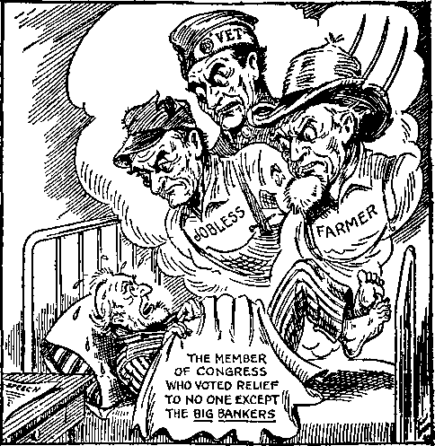
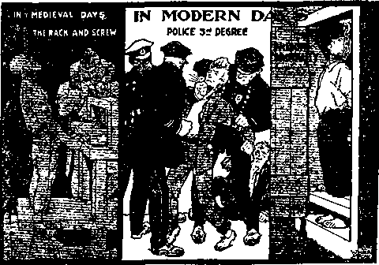

A JOURNAL OF FACT HOPE AND COURAGE
iiiiiimiimiiiiiitiiiiiiiiiiiiiimiiiiiiiiiiiimiiiiiiiimimiiii
in this issue
VINDICATION
IN PROSPECT AND REALITY
OUR SEMI-INVISIBLE FRIENDS AND FOES
THE ASSOCIATED PRESS
MEMORIES OF 100 YEARS AGO
WORSHIP
OF A PIECE OF BREAD
YE SHALL KNOW THE TRUTH
tiiiiiiHiiiiiiiiiiiiiiiiiiniiiiiiiiiiiiimiiiiiiiiiiiiiiiiiiiiiiiiiiii
every other WEDNESDAY
t___ J--*—‘---J------
five cents a copy one dollar a year Canada & Foreign 1.25
Vol. XIV - No. 341
October 12, 1932
CONTENTS
LABOR AND ECONOMICS
Mexico Welcomes Back Her Own 19 21 Out of 27 Families Jobless . 20 Factory Worker Farmers ... 20 Employment Conditions in Chile . 21
SOCIAL AND EDUCATIONAL
The Picture Gallery (Cartoons) 16-17
Unemployment and Crime ... 19
Lords Advocate Whipping Children
Bishop Vernon Gets the Air . . 21
The French War Machine . . .21
Hindenburg’s Message to Kaiser . 22
Youth Hostels in England ... 23
An Opening for Pastors . . . .24
Memories of 100 Years Ago . . .25
MANUFACTURING AND MINING
World's Richest Radium Ore . . 24
FINANCE—COMMERCE—TRANSPORTATION
Why Not Print the Money? ... 4
Fourth of World Trade Gone . . 19
Maine's Lobster Problem ... 21
Pullman Service in South Africa . 23
Kreuger's Italian Bonds ... 23
785,000 Telephones Disconnected 24
POLITICAL—DOMESTIC AND FOREIGN
All Weapons Are Defensive . . 22
Supreme Court Four-Ninths Right 30
AGRICULTURE AND HUSBANDRY
Our Semi-Invisible Friends and
Foes—the Insects.....5
Rats in Northwestern Canada . . 22
Boston “L” to Grow Mushrooms 23
Cows Beneath the Zuider Zee . . 23
British Farmers Tired of Tithe . 24
SCIENCE AND INVENTION
Scientific Fattening of Chickens . 20
A Crash-Proof Plane.....23
HOME AND HEALTH
A New Way to “Health” ... 19
Sterilization in United States . . 20
Brammel, ja, aber Aluminum nicht 31
How to Scale Fish......31
TRAVEL AND MISCELLANY
Child Slavery in Hungary ... 20
Complications in Abyssinia ... 23
Evangelist Sued for $126,000 . . 24
London Policemen Unarmed ... 31
RELIGION AND PHILOSOPHY
Vindication—in Prospect and
Reality.........3
End of Billy Sundayism • • -20 In Trinity Episcopal Cathedral . 21 Santa Clara Seminary at Cuenca 21 If Christ Came Baek.....22
“Fond Hopes and Cursed Lies” . 23
Bishop DuBose and Angel Gabriel 24
Ireland’s Eucharistic Congress . 26 “Ye Shall Know the Truth” . . 20
Published every other Wednesday at 117 Adams .Street, Brooklyn, N. Y., U. S. A., by WOODWORTH, KNORR & COWARD
Copartners and Proprietors Address: 117 Adams Street, Biooklyn, _V. Y., U. S. A. CLAYTON J. WOODWORTH .. Editor E. ,T. COWARD .. Business Manager NATHAN H. KNORR.. Secretary and Treasurer
Five Cents a Copy—$1.00 a Year Make Remittances to THE GOLDEN AGE Notice to Subscribers: For your own safety, remit by postal or express money order. We do not, as a rule, send acknowledgment of a renewal or a new subscription. Renewal blank (carrying notice of expiration) is sent with the journal one month before the subscription expires. Change of addres®, when requested, may be expected to appear on address label within one month.
Published also in Esperanto, Finnish, German, Japanese, Norwegian, Polish, Swedi.-'h.
, . Offices in Other Countries
British............34 Craven Terrace. London, W. 2, England
Canadian...........40 Irwin Avenue, Toronto 5, Ontario. Canada
Australasian ...... 7 Beresford Rd., Strathfield, N. S. W., Australia South African ........ 6 Lelie Street, Cape Town, South Africa
Entered as second-class matter at Brooklyn, N, Y., under the Act of March 3, 1870.
Volume XIV Brooklyn, N. Y.» Wednesday, October 12, 1932 Number 341
Vindication—in Prospect and Reality (By the Editor)
THE vindication of God's name is already with us, in prospect, and manifestly that means that the vindication in reality is nigh, even at the door. Judge Rutherford’s three books, Vindication One, Vindication Two and Vindication Three, make the mysterious prophecy of Ezekiel as plain as daylight. There is not the least doubt about it. They constitute the. vindication of God’s name in prospect; the vindication in reality will be along shortly.
It is more than 2,500 years since Ezekiel penned the book which bears his name. Neither he nor anyone since his day understood what he wrote prior to the year 1932 (A.D.), and that despite the fact that it is quoted from just fifty times in The Revelation of himself which God gave to His Son, and which He in turn imparted to His church by His angel through His servant John.
Our Lord twice quotes from the prophecy of Ezekiel (Luke 19:10; John 10:16); Paul quotes from it four times (Eph. 5:2; Phil. 4:18; 1 Thess. 4:8; 2 Thess. 2:4); Peter quotes from it once (1 Peter 4:17), and Jude quotes from it once (Jude 12). Several of these references are to the true and false shepherds and the sheep; one refers to judgment beginning at the house of God, and one to the sweet savor to God of a true and faithful devotion to Him of all one’s powers of mind and body.
But the New Testament is, with these exceptions, strangely silent about Ezekiel’s writings until we get to the last book, The Apocalypse, where it suddenly looms up as of first importance. The one could not be understood until the time had come for the other to be fulfilled. The Revelation provided the key to Ezekiel.
Only a year elapsed from the time Judge Rutherford had finished his studies in The Revelation, set forth in Light One and Light Two, and reviewed in these columns in The Golden Age No. 287, issue of September 17, 1930, until his studies of the first twenty-four chapters of Ezekiel’s prophecy were, off the press. Vindication One has been available for a year. Vindication Two and Vindication Three are now available, each on an initial printing of 1,000,000 copies.
What a treat they are! and what a responsibility they bring! The “remnant” that found their work in God’s organization revealed in every chapter in The Revelation find their present and future work revealed in Ezekiel, but another subject looms so large as to completely overshadow that and every other consideration, and that is the Vindication of God’s Name.
The first chapters of The Revelation are a view, largely, of the loosely-built organization that performed here in the earth the work of the 'Elias that was for to come’ before the 'great and terrible day of the Lord’ should be manifest. The first chapters of Ezekiel go farther. They make clear the immensity, the complexity and the irresistible power of God’s Universal Organization, which organization will for ever settle in the minds of all intelligent creatures the issue that has been raised as to Who is God.
The last chapters of The Revelation are a view of the City of God, the Kingdom, but it is such a view as to make one look for more, and long for more, and confidently expect more. Closer views are wanted of the truths locked up in the cryptic statement that “the Lord God Almighty and the Lamb are the temple of it”. One feels sure there is bound to be a great amplification.
The concluding chapters of Ezekiel’s prophecy provide just that. As everybody knows, the temple which Ezekiel saw in his vision was never built, and Vindication Three provides complete evidence that it never will be built. There is no occasion for it. The Temple which Ezekiel saw is “The Lord God Almighty and the Lamb”. But see the details in Vindication.
Do you wish to draw nigh to God? Do you desire to be near to Him? Come and see the way
through the gates from the outside into the Outer Court. Or, do you desire to go further? come up, through other gates, to the higher level of the Inner Court. Still better, do you wish a place in the Temple? There are still other gates and a still higher elevation.
Vindication Three makes it all clear where one is, whether in the Outer Court, the Inner Court, or the Temple, and what to do to make progress from one to the other, or to hold fast to the position already attained. Every right-minded person should wish to do with his life the utmost he can to place God’s name in a right light before all creation.
The middle chapters of The Revelation contain many views of the Devil’s organization which cannot be surpassed, but, if they could be surpassed, the more detailed presentations of Ezekiel, clearly explained in Vindication Two, provide such surpassing pictures.
Vindication One is a solemn warning to “Christendom” and to all the world of what is impending in Armageddon. In that final and successful fight for world supremacy and for righteousness, Christ Jesus and His invisible army will put to death all the great men that have defamed the name of the Most High and have made the world an unfit place for decent people to live. They must be removed that peace and justice and truth and love and righteousness may bloom and come to sweet fragrance and maturity.
This work will not be done by men, but it will be heralded by men, and the heralds are now going about the earth warning all, both high and low, rich and poor, great and small, what to expect. God’s kingdom is here; the King is about to slay those that 'would not that He should reign over them’. The “man of sin” that would restrain the heralds must go, too.
Vindication Two goes into detail as to who are the enemies of Jehovah. The hypocritical religionists get plenty of attention, but Big Business is shown up for just what it is, a Satanized system of commercialism which has oppressed the people of all lands and reproached the name of Jehovah God and is no more worthy to survive than are the governments that have done its will and are doing it today to the great injury and sorrow of their fellows. In this book we have the identity of Gog revealed. We are permitted, by Jehovah God, to lift the curtain and see something of what is going on in the invisible realm of the Devil himself.
Vindication Three contains a happy surprise. It was foreseen that it would examine the Temple. But it also contains a complete and most satisfactory exposition of the anointing and subsequent work of Jehu. Once more the remnant are refreshed and encouraged as they see the part they have played and are playing in the vindication of Jehovah’s name.
Words fail to express the gratitude that fills the heart as one slowly turns these pages and finds them filled with easily understood and manifestly correct explanations of scriptures which the wisest and best of mankind have for centuries been compelled to lay aside as not yet due to be understood. Happy is our portion. Blessed are our eyes that we see the things of which the prophets wrote, which we know they did not understand, but which we know we do understand, because all about us are the fulfilments. The Temple is still open. Will you come in?
These three wonderful books, with any other one of Judge Rutherford’s wonderful books, The Harp of God, Deliverance, Creation, Reconciliation, Government, Life or Prophecy, sent to any address on receipt of $1. Orders may be sent to this office. All twelve of his books, including Light One and Light Two, only $3, postpaid.
Why Not Print the Money?
THE New York American wants to know why the Government, in order to pay the bonus to the soldiers, should not print the money and give it to them direct. It wants to know why it is necessary for the Government first to sell the bonds to bankers, and then pay interest on the bonds, before the money can be issued. The answer is that the Government is trying to stave off as long as possible the complete collapse of the present iniquitous financial system. Everybody knows that the time will come when it must go, but the bankers that control the financial policies of the Government wish to postpone that evil day and retain their present advantages just as long as it is possible for them to do so.
Our Semi-Invisible Friends and Foes — the Insects
Part 2
WE HAVE no intention here to say anything about the antitypical locusts that are now making it so interesting for those that have not the seal of God in their forehead, but about the real, literal locusts that for centuries have been such terrible foes of humanity. The Scriptures have much to say about them. We quote a few passages:
If thou refuse to let my people go, behold, tomorrow will I bring the locusts into thy coast: and they shall cover the face of the earth, that one cannot be able to sec the earth: and they shall eat the residue of that which is escaped, which rcmaineth unto you from the hail, and shall eat every tree which groweth for you out of the field: and they shall fill thy houses, and the houses of all thy servants, and the houses of all the Egyptians; which neither thy fathers, nor thy fathers’ fathers have seen, since the day that they were upon the earth unto this day.—Ex. 10:4-6.
And the locusts went up over all the land of Egypt, and rested in all the coasts of Egypt: very grievous were they; before them there were no such locusts as they, neither after them shall be such. For they covered the face of the whole earth, so that the land was darkened; and they did eat every herb of the land, and all the fruit of the trees which the hail had left: and there remained not any green thing in the trees, or in the herbs of the field, through all the land of Egypt.—Ex. 10:14,15.
The locusts have no king, yet go they forth all of them by bands.—Prov. 30: 27.
Hear this, ye elders, and give ear, all ye inhabitants of the land, hath this ever happened in your days? or in the days of your fathers? Concerning it to your children tell ye the story, and your children to their children, and their children to the generation following: That which was left by the creeping locust hath the swarming locust eaten, and that which was left by the swarming locust hath the grass locust eaten; and that which was left by the grass locust hath the corn locust eaten.—Joel 1: 2, 3, Roth.
He hath laid my vine waste, and barked my fig tree: he hath made it clean bare, and cast it away; the branches thereof are made white.—Joel 1: 7.
The land is as the garden of Eden before them, and behind them a desolate wilderness; yea, and nothing shall escape them.—Joel 2: 3.
A writer in the National Geographic Magazine gives some details of the locust plague which swept over Palestine in 1915. It gives us some idea of what a terrible scourge a plague of locusts may Ire:
Attention was drawn to them by the sudden darkening of the bright sunshine, and then by a veritable shower of their excretions, which fell thick and fast and resembled those of mice, especially noticeable on the white macadam roads. At times their elevation was in hundreds of feet; at other times they came down quite low, detached members alighting. The clouds of them would be so dense as to appear quite black, with the edges vignetted till they thinned down and faded away into the clear blue sky around.
At once these numberless hosts began to prepare for the destruction that was to follow. Each female, now loaded with eggs, seeks a place suitable to deposit them, and with her ovipositors is able to sink a hole as much as four inches deep, through hard compact soil, such as would try the strength of human muscles even with iron tools. How so small and frail a creature can bore in such hard ground and to such a depth seems a marvel which only nature can accomplish or explain.
While boring the hole the female sits, wings outstretched, upon the earth, and possibly moistens the soil to facilitate the work. She evidently has the ability to stretch or lengthen her annulea, pressing her body into the hole till the depth required is attained. The eggs, averaging about a hundred in number, are now deposited in the bottom of this hole, not haphazard, but neatly arranged in a long cylindrical mass and enveloped in a sticky glutinous secretion, with which frothy substance the top of the hole is also sealed to prevent enemies encroaching, and at the same time of such a nature as to allow the newly hatched brood to get out readily. It was found, in digging for these eggs, that when newly laid they could with ease be removed from the soil in one piece over an inch long and as thick as a slate pencil; but once a few days had passed, they crumbled apart when touched.
It is estimated by competent authorities that as many as 65,000 to 75,000 locust eggs are concentrated in a square meter of soil, and allowing for a loss of 30 per cent in hatching, some 60,000 destroyers can emerge from a space 39 inches square.
It was observed that these new broods instinctively went in the reverse direction to that from which their flying parents had come, making practically for the northeast. None but those who have seen them can begin to imagine their countless multitudes and the destruction to follow.
The locusts, when advanced into the second or pupa stage, walk like ordinary insects, leaping only when frightened into a quicker pace, which they readily accomplish by the use of their two long and powerful posterior legs. However, while still in the first or larva stage, they seemed to hop much like fleas, so that when anything neared their thickened masses it seemed as if the entire surface of the ground moved, producing a most curious effect upon one’s vision and causing dizziness, which in some was so severe as to produce a sensation not unlike seasickness. The same was also true when watching them undisturbed on tree or field.
As the locust labors to release itself from the old shell, we see the new eyes emerging, leaving behind their old transparent films resembling miniature automobile goggles. With much shoving and pushing, the head alone emerges, the long wings slowly unfold from the sacks containing them, and the entire body, legs and all, drops out of its old shell. Instead of depending upon a framework of bones within its body to give it the required strength and stiffness, the locust relies upon its tough outer skin, and therefore, now that it has lost its old shell, it cannot be otherwise than limp and soft, so that it has to remain still until the hot sun and dry air have hardened and stiffened it anew.
While on the usual march, vegetable food being still abundant, it would often be seen that a larger locust would, without provocation or warning, walk up to a smaller one and with one bite nip off one of the long back legs. The victim seemed not to care, unless it happened to be a signal, as usually -was the case, for dozens more to pounce on it, consuming the entire insect in a few moments. Sometimes a mightier one happened by and carried off the entire prey to devour by itself. Similarly, scarcely had a locust been hurt or crushed before its fellow’s would be found fighting over it like dogs with a bone. At times injured locusts would be found eating away at their own bruised bodies, and not uncommon was it to find a locust minus its annuli and entrails, running about seemingly unmindful of its deficiencies.
Still more remarkable was a story told by a doctor friend who personally treated the case in question. It ran thus: A peasant woman on the plain of Sharon, during the locust pest, employed herself in trying to drive the creeping locusts out of her orchard. She took a tiny baby with her, and laying it in the shade of a tree, proceeded to her work. Returning shortly after, she found the child literally covered with the insects and its eyes already consumed out of the sockets. The writer’s little boy also was bitten on the throat by one sufficiently to draw blood.
Whenever touched, or especially when finding themselves caught within one’s clothes, they exuded from their mouth a dark fluid, an irritant to the skin and soiling the garments in a most disgusting manner. Imagine the feeling (we speak from experience) with a dozen or two such creatures over an inch long, with sawlike legs and rough bodies making a race-course of your back!
An old established method of stopping the progress of locusts while they are still in the walking stage is to drive them into sunken traps. To overcome the difficulty of the labor and time required in shifting these sunken traps, a Yankee in our party devised an improvement. An old box, tin-lined, was set on top of the ground, with an inclined plane leading up to it. The locusts, which can make ascents so much easier than descents, were driven into it just as easily as into the sunken trap. It was so quickly and easily placed that it proved to be a great success, the only drawback, as with the older type, being the labor of emptying it and the numbers that escaped. The next development was a tin hopper set on legs high enough to admit of fastening a sack below. To this the inclined plane was similarly attached. Thus the locusts jumped directly into the bag, which, when full, was readily detached and replaced with another, while the full sacks, not a locust of which escaped, were so handy to carry away for destruction.
In 1921 there was a plague of locusts in France; some 7,500 acres were ravaged. In 1925 South Africa had the worst scourge it had known in 20 years. The variety, voetgangers, foot-walkers (immature, wingless locusts), were a little more easily disposed of than when in the flying stage. Deep trenches, and plenty of poison and liquid fire were required to keep them down.
In 1928 they were in Greece, where the government was combating them with the big predatory locusts from China, the mantis, and expecting to spend $3,200,000 in a campaign against them. The same year they were in the Philippines, where the Filipinos are quite successful in scaring them into the sea by the terrible noises they make with a device called the bamboo maquina. The siren-like shriek emitted when this bamboo Oiorse-fiddle’ is played is enough to make the locusts and everybody else want to rush off and drown themselves.
The same year, 1928, they were in southern Xew South Wales, Australia, on a front twenty miles wide. They were also in incredible hosts in Palestine. Concerning the fight to subdue them in the latter country we quote two paragraphs from a correspondent who was on the spot:
For all the tons of weight we took, and all the bushel baskets of eggs, those enemy forces continued to advance as though they had suffered no losses at all! Never have I imagined such a spectacle as we witnessed on the classic Plain of Esdraelon between Megiddo and Nazareth. My horse was often fetlock deep in red insects which had changed their color like chameleons from a dull yellow-green when preparing to swarm in search of food. At times, indeed, my Arab mare was past her knees in the living, feeding masses that struggled upon grape vines and ripening grain and fruit.
Was anything ever more wonderful than the moonlit advance of scientific troops against this recurrent Plague of Egypt? The hot Eastern night was soon rayed and pierced with broad tongues of dazzling flame, mile long it seemed, that wilted and withered the locusts in countless myriads. We were now concentrating assault on some ten square miles of invaded farm lands between Semakh and Daganiah. Here burned and scorched locusts lay in incredible heaps. Our flame guns, strategically placed to anticipate new out-flanking motions of the invader, shot long bars of killing light in all directions, like the searchlights of a naval squadron searching out unseen attackers in a dark and stormy sea. Add to all this the howls and yells in Arabic, Hebrew and broken English, and you will visualize the weirdest war scene ever staged in the Holy Land since Joshua advanced upon walled Jericho . . . Toward dawn intelligence officers telephoned to the fighting front that the endless hosts were no longer continuing to settle on the crops and trees. The enemy were routed at last.
In the same year they were in Russia and also devastated many fields in the Tientsin-Peiping section of China.
In 1929 the province of Sind, India, was overrun, and in southern Bulgaria the government mobilized every man and woman between the ages of 16 and 80 in a successful attempt to combat the pest. In this contest more than 65 tons of locusts were destroyed by smoke, lye and oil before the victory was gained.
Early in 1929 the French opened a campaign which cost some $480,000, and involved the services of 60,000 Algerians, specially trained for the work, in an attempt to keep down the pest which was expected to be more than ordinarily active in northern Africa that year.
Beaters drove the insects against great sheets or into enclosures of corrugated iron, where they were exterminated by a spray of sodium arsenate, or by flame throwers such as were used on each other by ‘Christians’ during the World War. The ground was then sprayed with poisoned molasses.
Everything was scientifically calculated. The tables showed there would be 120 locusts to the ounce, and all about it. But, as if to show puny man that he is nowhere when it comes to a real fight, the next year northern Africa, all the way from Morocco to Arabia and the Persian Gulf, had one of the worst scourges in history.
In the fight that followed the locusts were so thick at one place in Morocco that they halted a train. One swarm in Egypt was fifty miles in length. Flame throwers were brought into use. At Amman, Palestine, one-third of the population was drafted to fight the plague. Much damage was done far down into the heart of Africa. The expense bill of the previous year was multiplied by ten.
In Transjordania at one time the British had 25,000 men battling the hordes of locusts. A dispatch said rather sadly, if not comically: “Last year powder was spread by airplanes, but the locusts appeared to like it. Greater hopes are held out concerning the new liquid.”
The first great locust visitation in the United States was in 1874, when all the territory between the Missouri river and the Rocky mountains was overrun. They came in swarms that darkened the sun, they carpeted the fields, and in instances actually ate the shingles off the houses. The crop damage that year was estimated at $50,000,000.
In the year 1931 thousands of square miles of Montana, North Dakota, South Dakota, Minnesota, Nebraska and Iowa, were ravaged. The official estimate was that about 46,875 square miles were wiped clean. In one South Dakota field of 1,600 acres it was declared that after the locusts had finished there was not enough vegetation left behind to feed a single animal. Poisoned food by the carload was distributed in the path of the oncoming hosts, which marched at the rate of fifty miles a day.
In April of this year South Africa was visited by a cloud of locusts said to have been 500 miles wide and 1,500 miles long. An attempt was made to attack them with motor trucks, but the trucks were soon outdistanced and all the farmers could do was to wait for them to breed and then attack the swarms separately. Millions settled on the sea and in one place were washed ashore, covering the beach to a depth of several feet.
In Tunis, at the same time, 100,000 natives had dug a trench 40 miles long, and were engaged in a life or death struggle to save their food supplies. A month later the troops were called out to fight them in Argentina and the Philippines, and in June they were in Italy and Mexico.
From an article in the Norfolk Landmark we quote a number of interesting paragraphs on this subject:
Three nations—France, England and Italy—have united in a war on the locust. All three have large colonial possessions in Africa, chief home of the insect, and, according to the terms of the new agreement, data about locusts and methods of controlling them will be made available to all at a central clearing house for information, in London.
“When a locust ‘cloud’ looms on the horizon in Africa, hundreds of Arab and Spanish laborers, overseers, and even wealthy French landowners themselves, and semi-naked Arab children go into the fields and walk abreast in an almost straight line, beating old wooden pails, empty boxes, a vegetable can, or a drum, or blowing a tin trumpet or twirling a policeman’s rattle. Each person walks in a furrow to himself, attempting, by deafening noises, to keep the locusts from settling. Frequently owners of plantations build fires and make them smoke to keep swarms of locusts in motion.
“If, however, the locusts do succeed in alighting, nothing can drive them off. Equally they take wing again the following morning — after stripping everything green from the landscape — unless the time has arrived for the female locust to lay her eggs. The female digs holes in the earth two or three inches deep, in which she deposits from 60 to 70 eggs, enveloped in a glutinous secretion, shaped somewhat like an ear’ of wheat.
“Men have to plow and spade every inch of the ground when eggs are laid, for the nymphs, hatched from the eggs, are more destructive than the locusts, and the only way to prevent the eggs from hatching is to uncover them and leave them in the open sunlight.
“This period of incubation is 21 days; then tiny creatures, called nymphs, crawl out. They remain quiet for two days and then begin to eat. They eat and eat and eat.
‘ ‘ Alen with torches burn the nymphs by the millions, but they crawl out of the earth faster than the hand of man can destroy them. The first one to come out takes the lead, and the others follow in swarms many feet wide. They make a curious noise, like the sound of the sea.
“It seems incredible that a thing so small and insignificant is so difficult to destroy. Build great fires and the swarms of crawling, wriggling nymphs will smother them, those in front being burned by millions, and those in the rear pushing on and passing over the burned bodies of the leaders. They will block and fill up a sluggish African stream, and the millions in the rear will pass over unharmed.
‘ ‘ The Government sends troops to aid in the defense, for it means ruin and starvation to thousands of people, besides heavy money losses. Great trenches are dug and the nymphs fall in, and when three-fourths full kerosene oil is poured on them and they are set afire or else earth is thrown on them to a depth of about two feet. They can crawl out of the earth if covered only with a few inches, but when deeply covered they smother to death.
“The young locusts are most destructive, selecting the choicest vegetables or tender shoots and green leaves. It takes weeks for them to develop from a tiny, black nymph into a full-sized locust, but they increase rapidly in size, and one can almost see their legs and wings develop.
‘ ‘ Arabs eat the flesh of locusts when killed by themselves, but refrain if their death has been caused by cold or the hand of an infidel, as they are then considered impure. Locusts are eaten after the legs, wings and heads have been picked off.
‘ ‘ They are either grilled or broiled and prepared with native wheat. If dried in the sun they are ground to powder and mixed with goats’ or camels’ milk and cooked in fat or butter and salt. Almost every animal devours locusts; even camels appear to like them as food. ’ ’
The female American locust (or grasshopper, as we usually call it in America) lays 600 to 800 eggs at one time, so that in one year’s time one grasshopper may have from 150,000 to 400,000 descendants.
This year, the descendants of the grasshoppers that were in the United States last year have been spreading ruin in parts of Manitoba, and there are also plenty of them in Idaho and Iowa. In Manitoba they were so thick as to interfere with the movement of passenger trains.
In a section of South Dakota adjacent to Chamberlain a strange disease broke out among the surviving grasshoppers (locusts) in July, 1932. On the farm of George Spreckles they died off by the millions; and when the scientists have found what killed them there is a chance that a new and vastly better method may be found for dealing with one of the very worst of the insect pests.
In the municipal cold storage plant at Seattle a supply of giant grasshoppers from the interior of China is kept on hand, held dormant until spring, ■when they are shipped and distributed in infected areas. These huge grasshoppers, which are normally about four inches long, make short work of the little American grasshoppers, as well as caterpillars, crickets and moths with which the farmers of the Northwest have to contend. But we can’t help but think it would be just too bad if those giant mantis, as they are called, should get out of control and do some of the things on this side of the water that they do in Asia.
There are other grasshoppers on ice in the Northwest, and they are there for good. Many centuries ago, before the glaciers were formed in the Glacier National Park region, huge swarms of grasshoppers were buried in the snows which later solidified into the glaciers. The insects, perfectly preserved, have been found in great numbers in what is otherwise crystal-clear ice. There is a Grasshopper Glacier, so called, some miles out of Cooke, Montana.
It will be a surprise to some to learn that, despite all our local supplies, we have to import into this country every year several tons of grasshoppers from South Africa. These are food for rare African birds in our zoological gardens. They contain valuable elements for which there has not been found a substitute.
America has three varieties of cicadas which are commonly called locusts, but which are really not locusts at all. The 17-year locust’ spends about 16 years and 11 months of its life under ground, where the pupa undergoes five transformations. It emerges to feed and mate and lay eggs and die. As there are at least 17 broods, and they have different years for emerging from the ground, it follows that there are locusts’ of this type every year.
And then, besides the 17-year locusts’, there are 13-year ones and 2-year ones. These cicadas all burrow a foot or two below the surface, where they attach themselves to a root for nourishment. Those of a given brood all come to the surface, in June, at almost exactly the same time. Ants make a business of helping themselves to the wells which the cicadas dig, and even drive the latter away from their own wells. During their brief mating season the cicadas sing in a monotonous buzz from early morning until sundown.
In view of what is contained in this short article on locusts, or grasshoppers, we feel we can fully endorse the editorial in the Better Health magazine which says:
To fight the fruit fly, to fight the boll weevil and the corn borer, to fight the flea that transmits bubonic plague and can see to bite even when the lights are out, to fight malarial mosquitoes, to fight the familiar fly and the countless invisible enemies of man, will give all of us all the fighting we want without fighting one another. Science can be directed to better ends in forging weapons to fight these pests than in maiming fellow men.
The chief of the Bureau of Entomology in the United States recently made the statement: “It has become strikingly obvious that insects are collectively the most important enemies of humanity on the earth. It has also become perfectly plain that if human creatures are to maintain their hold on this globe, if they are to continue to exist, they must learn to control insects. ’ ’
It was a bad day for New Jersey and for the United States when, in 1916, the Japanese beetle gained a foothold in the United States through a small shipment of bulbs from Japan to Riverton, N. J. This beetle, which eats anything and everything eatable, including even the very roots of the grasses, has spread all over New Jersey and adjacent parts of nearby states, involving a huge expense for attempts at quarantine and extermination.
Japanese pheasants feed on these beetles. They have been imported by the thousand and are now being raised and liberated so that they may help to keep the pest down. At least five parasites of the beetle have been imported. Effort is made to limit the importation to such parasites as know no other food and as are unlikely to develop bad habits of their own.
It has been discovered that the Japanese beetle is fond of geraniums; so beetle traps are baited with a sweet-smelling extract of geraniums blended -with malt. Once Mr. Beetle smells the geranium odor he hastens down the funnel into the trap, gets intoxicated on the malt, and is later destroyed -with boiling water. In 1930 the number of these malt traps was 25,583.
How it would be possible to obtain malt in a state which has such ‘godly* cities as Asbury Park, Ocean Grove, Bergenfield, Westfield and Summit, and which shone so brilliantly in the Lindbergh affair and the third-degree murder which accompanied it, we will not undertake to explain.
The word “beetle” comes from a word which means “to bite”; so a beetle is a biter. There are 12,000 kinds of these biters in North America and Central America, and some 150,000 of them of all kinds in all parts of the world. The 500 varieties of so-called “glowworms” are improperly called worms. They are really beetles. The methods by which these produce their lights, and the reasons why they produce the lights, are unimown.
Britain has a kind of beetle, called the “deathbeetle”, which has a ravenous appetite for old wood. At any time, in an old castle or church building in England, the death-beetles, which seem to work almost entirely in the interior of the beam, may scoop out the entire interior of a large piece of timber, leaving nothing but a hollow shell.
There is a beetle with a somewhat similar appetite in Brazil. It gnaws its way around a tree, quite close to the ground. Then it goes around again, gnawing a deeper and deeper furrow, and so on until the tree collapses. The land contains whole forests in which every tree has thus been leveled to the ground. For many years search has been made for some means of combating the ravages of this beetle, and at last a bug has been discovered which preys upon it; millions of these are being taken to Brazil.
The Asiatic beetle (a different one from the Japanese beetle) is making trouble on Long Island. To fight it, a tiny 'digger’ wasp has been imported from Korea by the hundreds. This wasp lays one egg a day, and every day. When an Asiatic beetle is in the neighborhood, she manages to glue her egg to the under side of the beetle, in a place where he cannot reach it, either with his mouth or with his feet. The wasp comes to life finding its nose resting against its favorite food supply, and the result is a thrifty wasp and a dead beetle.
The elm-leaf beetle defoliated about a half million trees in Connecticut, New York and Massachusetts last year. This little creature lays 600 eggs in a season, and each egg that comes to maturity eats an oval hole about a quarter inch in diameter and then starts an egg-laying contest of its own. The early settlers in an elm tree live to see the tree pretty well ruined.
Australia has a grayback beetle which in 1929 caused millions of dollars’ worth of damage to sugar plantations. Two men in Brisbane, who chanced to know where they were thickest, are said to have made $1,000 in 10 days by catching them and turning them in for the bounty.
Not all beetles have a bad disposition. One friendly fellow, on one occasion, was seen to take a worm by the head, turn it around and conduct it tenderly to a hole in the ground, so that it might not be picked up by a keen-eyed blackbird in the vicinity.
The Devil’s coach horse lives on decaying animal or vegetable matter and is said to be of some importance to agriculture by reducing dead animal and vegetable matter to a condition in which it is assimilable by plants.
Like the World War, the European corn borer is something that came to us from the quarrelsome part of the earth, Europe, and is of about as much benefit. It would be bad enough if it just attacked corn, our principal crop, and ruined that, and stopped there. But it has an omnivorous appetite and has been found attacking more than 200 kinds of plants, including several common weeds, the small grains, the millets, buckwheat, broom corn, hemp, peanuts, soy beans, white clover, and hops.
In the South the corn-ear worm, which we suppose to be the same as the corn borer (but which may not be) is found to be cannibalistic, and this is taken advantage of to keep them down. They are encouraged to lay their eggs on corn planted late; there the larvae eat one another and keep away from the cotton until the bolls have developed so hard that the borers or worms cannot penetrate.
In Michigan a corn has been bred which is a cross between a native variety and a South American type, which has shown itself 100-per-cent resistant to the corn borer when planted in alternate rows with other corn which has been infested with this parasite. As a result of this discovery many sections which had been ruined by the borer are now again raising corn.
Twenty different parasites on the corn borer have been imported and a dozen of these are doing good work. Other aids are cutting the corn at the surface, plowing under cleanly and burning completely everything left on top of the ground.
There are two different strains of the corn borer present in the United States. One of these, called the ‘two-generation’ strain, develops two broods of moths a year, one in the spring and the other late in the summer. It has an appetite for corn and broom corn, also cut flowers, the entire plants of chrysanthemum, aster, gladiolus, dahlia, lima and shell beans in pod, rhubarb, and beets with tops.
The boll weevil, which does so much damage to cotton, is a rather rare insect of Central America, or was until we made a nice home for it in our southern cotton fields. At present it eats up some $100,000,000 to $150,000,000 worth of cotton per year, and yet, with all that assistance to his marketing operations, the poor cotton farmer produces such an overplus that he is now getting only about 5c a pound, one-fourth the regular price.
"Gryllus” is the technical name for the cricket. Early in December the grillos, as they are called, almost swamp the tropical cities on the west coast of South America. They come with the first rains. For a few days they are everywhere, darkening the street lights and hiding the color of paint on the walls. They spring all over pedestrians and are crushed beneath their feet at every step. They enter homes and stores and dine upon woolen and silk goods early and often. The first heavy rains drown them by the millions, and the dogs and cats and sea gulls take those that remain.
The Japanese have reared crickets from time immemorial and have greatly developed their musical possibilities. If a cricket is fed amply on lettuce leaves, with those of the tomato, carrot and cucumber, it will sing all day. If fed salt it ceases thenceforth to sing.
A cricket has tremendous vitality. It can live in an almost total vacuum or in compressed air, and can be quickly switched from one to the other, which is something no human could endure. It can be. centrifugally whirled at 1,200 revolutions a minute for ten minutes and seems not to notice it at all.
By timing the frequency of a cricket’s chirps one can tell the temperature without a thermometer. The prevailing temperature in degrees Fahrenheit equals the number of chirps made in a quarter of a minute, plus thirty-seven. The snowy white or tree crickets are the ones used as thermometers.
Crickets are sold in Japan at 10c each; fireflies are 1c each, but toward the close of the season drop to 75c per 100. The chief insect store of Tokio maintains three breeding stations. A really fine insect cage sells for $100, occupants and all.
One kind of ants would be plenty enough if they were all Mexican Tepeguas or foraging ants. These ants, which are blind, when they attack a house, kill every rat, mouse, lizard, spider, centipede, louse or cockroach it contains. They will even attack a man.
Another kind of ant we could get along without is the so-called ‘flying white anf or termite, of which we have 39 varieties in the United States. In most instances these ants, which destroy the timbers in a home, or which eat the insides out of books without the damage being apparent from the outside, can be killed by merely seeing that in the construction of the home, or in its reconstruction, no untreated wood comes in contact with the earth. The termite nest is underground; his food is wood; if the two are separated and the engineers of the colony cannot bridge the gap, he dies, dries up.
The termite ant has been known to build structures rising twenty feet in air. The cubic space in an ant hill will contain a million times as many inhabitants as the largest human habitation. Termites eat their own dead and the skins they have shed. There is no dirt or filth in the colony. Invalids and loafers are dispatched and eaten. On one occasion termites in the Philippines ate nearly $2,500,000 worth of paper money.
In Java black ants are bought and sold by the millions to protect the cocoa trees. When these ants are present in a tree the beetle, which is the cocoa tree’s worst enemy, becomes disturbed and ceases his destructive work. The ants do not injure the trees.
Peru has a ‘surgical’ ant, so called. When a native is wounded he gets a certain type of ant with powerful jaws. The ant is made to bite the severed edges of the skin and bring them together. After he bites his body is snipped off and his head with its death grip on the skin remains till the wound is healed.
Prospectors for precious metals find ants a valuable ally. By examining the piles of soil brought to the surface by the ants, which often reach considerable depths, they can get a good idea of the general character of the material to be found immediately below.
Ants do some astonishing things. There is a yellow ant in Florida which, twenty-four hours before a heavy rain, carries its young grubs up from the underground tunnels into the upper stories of the mound. It is well known that some varieties of ants keep herds of ‘cows’ to supply them with milk, and employ cowboys to watch the herds. These ‘cows’ are aphids which secrete a sweetish liquid which the ants enjoy. In cold weather the aphids are housed in barns at night, but during the day and throughout the summer are out of doors, constantly guarded to prevent their escape.
Some ants prepare food in the summer. Seeds are gathered. When they become fully dry they are pulverized, the flour is chewed into dough, and the dough is left in the sunshine to bake^ Some ants in cold weather move their babies over to the warm side of the ant hill, the side next to the sun.
An ant may go insane. One that ran around in circles and attacked members of its own colony was killed. Microscopic dissection revealed a tumor on the left side of the insect’s brain, causing its right feet to drag when it walked.
A careful study of a huge nest of ants in the Alps disclosed the fact that it was about twenty-five feet in diameter, contained at least 400,000 ants, and that it disposed of about 40,000 insects daily. An exact count made over a long period of time and in various kinds of weather showed that 42 percent of the captured insects were forest pests.
In Africa a group of ants overtook a caterpillar armed with bristles which exude a liquid highly disagreeable to them. One by one they bit off the bristles, sealing them with dry earth, and wound up by killing the caterpillar and carrying him off.
There are ants that sew leaves together; and of what do you suppose the thread is composed? Their own babies. When the babies get bigger they find their food right at hand.
Among the so-called ‘agricultural’ ants are some that have areas a dozen feet across where they grow their ant rice. There are two classes of workers, major and minor. The majors have big heads and capable jaws with which they crack the hard grain for general consumption.
If a burning match is dropped too near an ant hill, and the thing is done repeatedly, the ants of a certain kind called ‘fire-fighters’ will organize into a fire brigade and put it out with ejections of formic acid. The soldier ants of Brazil, which march twelve abreast, five files to the foot, with officers alongside at a distance of four or five inches, will tackle anything in their path, even including a fire. They come in such numbers and with such precision that absolutely nothing can stand against them. The largest animal, if it remains in the path, will within twenty-four hours be reduced to a pile of clean white bones.
Ants are hospitable. Tiny crickets are often maintained as pets in ant homes, and beetles with a peculiar fragrance are also made welcome. Certain species of ants possess a stridu-lating instrument consisting of a finely ridged lute upon the abdomen, and a plectrum so situated that by rasping the surface it can produce an extremely delicate and high-pitched musical note. Dr. Robert Staeger inKosmos (Stuttgart), writes of this beautiful faint little sort of humming chirp. He says:
I remember with delight the first time I was present at such a musical ‘ festival ’. This was a few years ago on the Bel Alp in the Wallis. The entire quiet which prevailed at this lofty station helped me to perceive the sound. The ‘concert’ was given by grass-ants which dwell there in very populous colonies. When I lifted a stone from a nest and held my ear down above the milling throng of the fleeing residents, I perceived a perceptible chirping sound, the product of many thousand voices, in which delicate crescendi and diminuen-di were plainly perceptible. In order to prolong my enjoyment of this music I shook a whole nest into a linen bag, which I hung temporarily on the wall of my hotel room. When I wanted a concert I needed only to shake the sack to hear the loveliest serenade in the middle of the night.
The ants make mistakes, too. In the Dutch East Indies there is an insect which secretes a fluid that tastes very good to certain black ants. The ants drink the fluid, which paralyzes them, and then the insect that has entrapped them murders them and drinks their blood at his leisure. How like the politicians!
In Tunis there is a species of ant that goes to another kind of ant colony, gets herself adopted as queen, and straightway her children own the whole works and all the rest become slaves. In the end, by preventing their natural increase, she kills off all the workers and dies herself of starvation. How like Big Business!
In the huge ant heaps of South Africa the queen of the hive is imprisoned for life in a hard-formed pocket of clay. She is copiously fed, but cannot move herself. Her business is to lay eggs, and that, besides eating, is all she does. How like the clergy!
Ants are poisoned by using equal parts of tartar emetic and sugar, with a dash of honey. Moisten, and pour into shallow dishes set in the runways of the ants. They will eat very freely of this and, as it does not take effect quickly, they carry the poison into the nest and thus help to dispose of the whole brood.
A second method, when a colony has been located, is to pour an ounce or two of carbon disulphide into each of several holes made in the nest with a sharp stick, and then quickly stop up each hole with a clod of earth. A heavy wet blanket thrown over the nest also helps to keep the fumes in the galleries until they have done their work. Carbon disulphide is highly inflammable and must be handled with care.
A third method is to dust the ants with sodium fluoride. A fourth method is to dissolve one pound of sugar in one quart of water, add 125 grains of arsenate of soda, boil, strain, add a small amount of honey, and soak a sponge with the mixture and put it where the ants can get it.
Science has identified about 650,000 species of insects, and it is estimated that there are probably five times that number in existence. New York state alone has identified 19,000 species, of which 8,000 have been found in the metropolitan area. While we accept the more conservative estimate of some three million species of insects, others have estimated that there are five to ten million species. Anyway, we cannot hope to describe many of them in this article. Entomologists add about 6,000 to their lists annually.
Every living tiring is wonderful. Here are some of the wonders of some of the insects. Upon the lens of the eye of a dragon fly 17,000 facets have been counted, each one more perfect than any side of a diamond fashioned by the hand of man. It is so keen of vision and swift of flight as to recognize, follow and catch on the wing the tiniest prey. It can fly forward, backward, to right or left at top speed. Most insects are nearsighted, and it is a good thing for the rest of us that they are.
Crickets hear with their elbows; other insects have the hearing apparatus located in the legs. The lungs (spiracles) of insects are all over the body, and that is why oily substances smother them. Wherever the oil touches the body a thin film spreads over it, covering the air-openings, so that the insect soon dies by asphyxiation.
Talk about a sense of smell! In a single antenna of the hornet are about 13,000 to 14,000 microscopic pits filled with fluid. Each pit is an olfactory organ, supplied with a fine nerve. In an antenna of the male European cockchafer there are 39,000 of these pits; in the female, 35,000. That is the first time we ever knew the men had better noses on them than the women; but the difference is not enough for us to brag about, or we would.
Stick insects, from the East Indies, are so much like tiny twigs or sticks that it is almost impossible to distinguish them from their surroundings. They imitate the twigs exactly, folding their slender legs close to their bodies and hanging from the smaller branches just like leafless stalks.
Leaf insects are of a bright green tint and are shaped exactly like leaves, the wings being folded over one another and marked with veins. The legs are shaped like smaller leaves. They are quite safe from the birds, which think that they are merely leaves.
"When it comes to a sense of location the insects have us all beat. A wasp or bee, before leaving home the first time, examines the surroundings carefully, and thereafter never has any trouble in returning; but a young bee that has not made the study is quite lost. This shows that insects have powers of observation and memory.
Without the little lac hugs of India and Siam we would be without shellac, which is an exudation from their bodies. They feed on certain trees by the millions, exuding the material subsequently to form their tomb. The incrustations are broken away with wooden mallets.
The greatest gift of the insect to agriculture is pollination. It is claimed that bananas and oranges are the only fruits under present cultivation that do not rely on insect pollination. Without insects there would be no vegetables, no cotton or linen cloth, no silk, no clover or alfalfa, and no wool.
The choicest of all figs, the Smyrna fig, depends upon the fig wasp, or Blastophaga, if you prefer the scientific name. Until the wasp was imported it was impossible to grow this fig in America.
The scale insects supply certain fine waxes, cochineal and its accompanying purple dye and some other materials.
In Australia recently three hundred million bugs were released in the hope that they would keep down the growth of the prickly pear. Introduced into Australia a hundred years ago, this plant now covers 63,000,000 acres and is spreading at the rate of 500,000 acres annually. The cochineal insect, from which the red dye of that name is made, is a natural foe of the prickly pear and other cactus growths, and there are other insect foes.
The earwig, once regarded the enemy of gardeners, is now considered one of his best friends. It is a scavenger, a dispatcher of plant lice and of other insects, and useful in getting the soil in friable condition. The earwig, giant of all insects, will pull a wagon loaded with 530 times its own weight, and will drag a dead weight of pins 27 times its own weight. Growing earwigs have a habit of eating their younger brothers and sisters. The young earwig changes its skin four times before maturity.
It was doubtless from a full heart that a subscriber from Oklahoma recently wrote us:
I want to tell you something about the insects and pests we of Oklahoma have had to contend with this year. Just now we are troubled with the oat bug, which is a minute black bug that comes in droves of thousands, flying through the air, alighting on everyone, indoors and out. They are so very troublesome and annoying this hot sultry weather. You can hardly keep them off your face. Our relief comes when the wind rises and blows them away. They come about the time the oats begin to ripen, and, as a rule, last only a few days; but this year they are more numerous and have lasted much longer than usual. There are many different kinds of ants. The flying ant is a very common kind; it often gets into the houses. There is a very small ant about the size of the oat bug that seems to come through the very walls, and is so annoying, as it always gets into kitchens and pantries. There are different remedies for its control, some of which are fairly efficient. The big red ant is on the increase, using up quite a lot of land with its hills all through the yards and fields. Its sting is very painful, and is poisonous to some people. There are lots of chinch bugs now, but we do not have them every year. Mosquitoes, we always have them with us. Even the moles are burrowing all through the ground, spoiling the lawns and gardens. There are several kinds of flies to annoy man and beast through the day. They have been known to kill cattle and horses. And last, and least in size only, is the pestiferous chigger, which is so persistently attentive to us all. But there have never been any so zealous as those that live in our dewberry patch. Oklahoma is one of the beauty spots of the earth. The nights are wonderful. We love to sleep out of doors, but it is almost impossible to do so on account of the insects. The prairie dogs are destroying the pasture land and have to be killed off periodically.
There you have it; living in a paradise, but with at least ten different kinds of pests that make it impossible to live in comfort. What is true of Oklahoma is more or less true of every beauty spot on earth. In the peach districts of the South the peach worm, the peach borer, and fifteen other kinds of insects, including the San Jose scale, dispose of $2,000,000 worth of peaches every season. The apple-tree borer does for the apple tree what the peach borer does for the peach tree.
In 1926 L. O. Howard, writing in Natural History, said:
It is estimated that the money loss from the work of insects in the United States exceeds two billion dollars yearly. To put it in other words, insects in this country nullify the expended labor of a million men. They destroy, in their feeding, from one-tenth to onefifth of all the crops planted. They carry and spread plant diseases which destroy an additional percentage of our crops. They damage stored food and other food products. They transmit certain diseases to man, reducing his economic efficiency to the extent of hundreds of millions of dollars annually. They lessen the value of his cattle and of his other domestic animals by direct parasitism or by the carriage of disease; and in many other ways are destructive to his interests.
The better the shape man gets the earth into, the easier it is for the insects to live. The insect can survive long periods of famine and extremes of heat and cold. His young are born with a knowledge of the trade at which they will make a living, while man works till he is twenty-one trying to get something into his head, and when he has finally got it somebody else invents a machine that makes his knowledge of no value.
The vegetation on Vank Island, Alaska, was destroyed by a cloud of insects akin to ants that filled the skies to such density that they could be grasped in the air by the handful. There are said to be 200,000 kinds of tree-attacking insects. Our best friends in keeping them down are the birds. Wind transportation and airplanes are carrying all kinds of pests to every corner of the world.
The tobacco plant has its foes, and we are glad of it; would be glad if it had a thousand times as many and each one a thousand times as deadly. It is almost impossible to travel by train now without having to sit near somebody with an odor that would make a Putorius by contrast smell like attar of roses. Aphids, sap-suckers, have the power to grow wings in a night.
No need to say anything about cockroaches or lice or bedbugs. Not sure if they attack tobacco users, and certainly no reason why any self-respecting insect would wish to do so. Botflies often cause sheep to go insane and cause their death. Horn flies, gadflies, screw worm flies, lice and fleas are other animal pests that cause great losses and trouble.
There are 300 kinds of insects that prey on the apple, 100 each on clover and the grape, 70 on the sugar beet, and 50 each on the cherry and the plum. $4,000,000 a year is spent spraying apple trees for the coddling moth, $1,000,000 for the brown tail and gypsy moth, and $10,000,000 to combat the San Jose scale. Orange county, California, spent $1,273,991 in 1928 to defend its fields and orchards against enemy insects. The total annual loss from insects in America is estimated at upwards of $2,000,000,000.
This is a question that is being often asked of late by those who have considered the insect question and who are unfamiliar with the Scriptures. A few years ago arctic Lapland was invaded by an army of short-tailed rats, lemmings, as they are called. This army was described as seventy miles wide and twenty miles deep, and literally drove everything before it. They finally drowned in the sea. Only two years ago Manchuria and northern Mongolia were overrun by a huge army of hunger-maddened rats. Australia is overrun with rabbits. Every year they come, and must be fought with poisons and traps by every land owner, in accordance with law.
In an article bristling with facts as to why insects are better fitted to maintain life on earth than is man, Dr. L. O. Howard, principal entomologist of the United States department of agriculture, recently said:
If any reader does not fully appreciate the possibilities of certain insects in the way of rapid increase, he may be interested in Herrick’s recent estimate based upon careful weighings and calculations showing that a single cabbage aphis might have in less than a year, in central New York, where there is food enough, so many descendants that, although each one weighs little more than a milligram, the ponderable mass of the whole would weigh more than 822,000,000 tons.
In pounds, this would be 1,644,000,000,000. Estimating the human population of the world at 2,000,000,000 and the average weight at the greatly exaggerated figure of 150 pounds, we have as the total of human weight 300,000,000,000 pounds. In other words, the plant lice descended from one individual of one species in a single season would weigh more than five times as much as all the people of the world.
This seems like the worst kind of nightmare, and Herrick himself jokes about it. But does it not give you a better idea of the possibilities of insect life ?
Right now, in the United States, it is claimed that insects destroy constantly the work of a million men. In April, 1931, a single swarm of buffalo gnats caused the death of 125 mules in Coahoma county, Mississippi, and more than 100 mules in near-by territory in Arkansas.
Pyrethrum, an ingredient of many insecticides, comes from Japan, -where the flowers are grown. The Asiatic beetle is kept down by the application of emulsified carbon disulphide to the soil. Strawberry weevils are killed by a liquor distilled from leaves of a drug imported from China.
Plant lice and the nymphs of the grape leaf hopper are kept down by nicotine dust and soap and water or sprays of the same. San Jose scale and twig borer are kept down by lime-sulphur spray; cherry slugs, by arsenical poisons. To get rid of cucumber bugs soak the seeds in turpentine for twenty-four hours before planting.
A single pinch of potassium permanganate will kill all the germs in a thousand-gallon tank. A handful will keep a ten-acre swamp free of insects for thirty days. Ammonia water is good for bites of mosquitoes and spiders and for bee, wasp and hornet stings; baking soda paste is good.
Kerosene, gasoline or benzine every three days for two weeks is good for the discouragement of bedbugs and fleas. Flies that drink formaldehyde in water are sorry they did. Borax chases cockroaches. Tobacco, camphor, naphthalene, cedar and tar are all repellents of moths. Fumigation by carbon disulphide kills infestations in clothing stored in tight containers.
In South Africa a special poison is sprayed over donkeys. When the tsetse fly alights on the animal it absorbs the poison through its feet and dies. It is believed that this discovery may indicate a way by which the sleeping sickness can be controlled.
The living insecticides are other animals or other insects that live upon their fellows. Birds consume insects by the billions. One bird will completely clean out an entire hornet's nest. The ant-killer, widely distributed in tropical regions, sucks the juices from every little creature of any kind that comes within reach.
Every insect has its parasites; the entomologist’s principal job today is to find what it is and how to put it in the insect’s path. Parasites
INSECTS CAUSED THE DEPRESSION From a British Publication
are after the wasp that destroys timber, the pear slug and the blowfly that kills so many sheep in Australia and South Africa. Forty-five kinds of parasites, of which twenty-three were imported, assail the Mexican boll weevil.
The ladybugs which are so much used in California to keep down the mealy bugs, deadly enemy of fruit trees, were originally found in Australia. Now they are often released in orchards by the sackful, and are kept in cold storage in warehouses until needed.
INSECTS IN THE COLORED CHURCHES (Courtesy of the Amsterdam News)
The praying mantis, used in keeping down the grasshopper and other insect pests, is of Asiatic origin. It has a voracious appetite. The females are cannibals, eating the males. The poor men do certainly have an awful time in this world.
We speak of methods of insect control, but so far none of the insects have been controlled. At present 22 percent of the wheat harvest is lost because of insects; 20 percent of the fruit harvest is lost, and there is a 10-percent loss of animal products, for the same reason.
Besides the methods most recently described there has of late been a considerable use of poison gas in battles against locusts. The locust problem in the United States has possibilities of being a serious one; the breeding area extends over 300,000 square miles.
FOR EVERY DOLLAR THE FARMEI
IT NOW REQUIRES THREE DOL
INSECTS IN THE I (Courtesy
In the Northwest a high-frequency radio machine, which, however, interferes with broadcasting, gives promise of being a powerful insect exterminator. The Bethel family gardens under the shadow of the Watchtower WBBR radio towers are extraordinarily prolific, partly for the same reason. High-powered radio waves are not hard on us coarsely-built humans, but they are hard on the constitutions of the more sensitive little insects.
Near Geneva, N. Y., electric lights are being used to lure insects to their death. There are some plants that live partially on insects. A subscriber writes that it costs him nothing to feed the fishes in his pond. He places an electric bulb with a large reflector over the pond. The insects always come to the light; they fall into the water, the fish are fed, and the plant life in the vicinity is spared.
One of the best of all methods of keeping down insects is to have a good old-fashioned honest-to-goodncss hard winter, with the weath-cr away down around 20 degrees below zero. But that does not seem altogether practical in the tropics, or even in our own southern states. The insect problem is a big problem, any way you look at it.
The Associated Press
IF THE Associated Press had been in existence in the days of Valley Forge it would have been firmly on the side of George III and Benedict Arnold and would have sneered at the
’’EDERAL RESERVE
sincerity of the men whose sentry duty was marked by blood-stained footprints in the snow.
If the Associated Press had been in existence in the days of the martyrdoms at Oxford it would have unhesitatingly been on the side of Bloody Mary and tried to raise a laugb at the act of Thomas Cranmer in first extending into the flames the offending hand which had signed a confession forced by fear of what he finally endured.
If the Associated Press had been in existence in the days of the Bigot of Geneva, it would have had its reporter sitting by the side of John Calvin and
of Labor) enjoying with him the
screams of Servetus as he roasted at the stake five hours by a slow fire; and, indeed, the Associated Press is even this very day a great admirer of the church John Calvin founded.
If the Associated Press had been in existence in Florence in the fifteenth century it would have been on the side of Pope Alexander VI and would have clamored for the death of Savonarola and rejoiced in it.
If the Associated Press had been in existence a few years earlier it would have been on the side of the Council of Constance and calling for the burning of John Huss. At this very day the Associated Press is a great admirer of the
THE NIGHTMARE!
INSECTS NOW WORRYING POLITICIANS (Courtesy of Labor)
church that murdered fifty millions in the Middle Ages, John Huss one among the many.
If the Associated Press had been in existence at the beginning of our era it would have been unqualifiedly on the side of the Itoman emperor and his appointees, Herod and Pontius Pilate, would have had a reporter present to mark with approval the bargain between Judas and the high priests, and would have had columns to show that when Jesus was crucified it was just the right thing, and was really for the good of
INSECTS PAST, PRESENT, BUT NOT FUTURE ( Courtesy of New York American)
the Roman people, the land of Palestine, the Hebrew people, business, religion, politics, education, and everything else worth while.
The Associated Press is never intentionally on the. side of the plain people, on the side of justice, on the side of truth. It is always on the side of entrenched power, political, financial, religious, whatever it happens to be. At least that is our experience with it.
We write these tilings out of a full heart because of the dirty way the Associated Press has treated the persecutions Jehovah's witnesses have endured at places within its knowledge, and where it had an opportunity to take its stand on the side of right and preferred to take its stand on the side of wrong. It automatically takes the wrong side in every such case.
Such an instance occurred in its report of what happened at Bethlehem. The facts are well summarized in the following letter of the Watch Tower Society to the Associated Press headquarters in Pennsylvania, copies of which went to their general manager in New York and to the mayor of Bethlehem. The letter speaks for itself:
Thanks for your letter of July 23. Those who have charge of the Associated Press service might well be commended for their being, as you say, “always glad to receive criticisms of stories carried in our report.”
On the other hand, as touching the activities of Jehovah’s witnesses, the surest proof that the Associated Press is NOT fair and NOT impartial appears unmistakably in
(1) your readiness to receive “reports” “on the authority of the police”, and
(2) your practice of rushing to yield the facilities of your organization and service at every opportunity to spread abroad such “reports” in the form of “stories”.
In the “story” mentioned in our letter to the editor of the Lancaster New Era (copy of which we sent to your New York office), you are most certainly in error in reporting that at
“Bethlehem, Pa., July 18. Fifty of about sixty-nine religious crusaders, who carried banners reading, ‘We believe only in the “kingdom of God”,’ today were in jail here in default of payment of fines of $2.50 each.”
Firstly, none of the persons whose lawful activity, as Jehovah’s witnesses, was reluctantly interrupted by members of the police force of Bethlehem were or are “religious crusaders”. None of them possessed or carried a banner or banners of any kind or description. None of them were in jail at Bethlehem on July 18.
The facts are, as stated in our previous letter, that some of Jehovah’s witnesses, a company of more than three hundred men and women, went peacefully and in an orderly manner to Bethlehem on Sunday July 17 to engage in preaching and did preach, in obedience to the command of Jehovah, the gospel or good news of His kingdom, going from house to house and exhibiting to the people the message of the kingdom of Jehovah God in printed form.
Written notice of the intention of Giese persons to do this work was duly presented in advance to Robert Pfeifle, mayor of the city, together with a list of the names and addresses of all the persons. No request for “permission” to do this lawful work in Bethlehem was made of Pfeifle or anyone else. The several persons did, however, ask and request that they ‘be permitted to do the work without any interference’.
In other words, this company of persons did invite Pfeifle and the police officials of Bethlehem to take notice that a good work would be performed among the people of the city and that any interference with the performance of that work would be a proper matter for police attention.
Pfeifle and the police officials, acting under the influence of the clergy of Bethlehem, and particularly an Episcopalian who is also a city “father”, ordered members of the police force to interrupt and stop the lawful activity of these men and women. To many of them the police officers shamefully confessed that they ‘hated to take them in’ but that they (the officers) were acting under orders and had no alternative.
On Sunday evening (July 17), after more than a hundred of these men and women had been haled into the courtroom at Bethlehem municipal headquarters, Pfeifle, speaking for his employers and colleagues, hypocritically announced to the assembled company of “criminals”: “We do not wish to persecute you people.” Then, in his extreme chagrin, Pfeifle informed them of his decision to ‘have the acting magistrate dismiss the complaint against them all, not because they were not guilty, but because he did not wish to persecute them’; and then added: “Now I want to tell you, if you come here again, I will send you all down to the county jail. ’ ’ Then Pfeifle withdrew and the acting magistrate unconditionally dismissed the entire company, about 9: 30 Sunday night, July 17. With one accord, the members of the company gave praise and thanks to Jehovah, the living God, for their deliverance.
As the men and women filed out of the municipal building they were greeted in the streets by waiting groups of local residents, numbering hundreds, who had been visited in their homes earlier in the day by Jehovah’s witnesses. Other thousands of residents of Bethlehem who were similarly visited the same day can also tell your representatives how they gladly received Jehovah’s witnesses who called upon them at their homes and how they listened with joy to the happy message which was brought to their doors. Not only did the people of Bethlehem eagerly accept that message, but some invited the messengers to stay and dine with them, and others sincerely asked that these messengers would “come back, many times”.
To clarify the matter further in your view, let us add, advisedly, that the purpose of our previous letter and also of this one is, that the men responsible for the Associated Press service may be reliably informed as to why Jehovah’s witnesses, in obedience to the command of Jehovah, joyfully performed their lawful duty at Bethlehem, and who is responsible for attempting to prevent the people of Bethlehem and of other communities from being served with the message that it is now the privilege and right of every God-fearing and honest person to understand.
That you who have charge of the Associated Press service shall have no more occasion or excuse for attempting to justify your action in formulating and circulating ‘ ‘ on the authority of the police ” or of any other willingly ignorant persons “stories” with respect to the activity of Jehovah’s witnesses, we are sending to your general manager in New York a copy of this letter and marked copies of the enclosed numbers of The Golden Age containing complete text of speeches widely broadcast by Judge Rutherford, entitled,
“Jehovah’s witnesses: Why Persecuted?” “Can the American Government Endure?”
Slivers
HPHE year 1930 was not so good for foreign trade, though it amounted to over $40,000,000,000 for the twenty-two leading nations of the world. But in 1931 it was more than $11,000,000,000 less.
A STUDY will be made in Madrid of 40,000 bundles of archives dealing with the original discovery and settlement of America. These bundles have hitherto not seen the light of day and will no doubt contain many items of real interest.
IN THE London metropolitan police area in 1928 there were 3,500 burglaries and break-ings-in; in 1930 in the same area there were 5,700, and in 1931 there were 8,000. Everybody wants to live, and when faced with starvation there are always some who will take the easiest way.
MEXICO has welcomed back 300 laborers, unemployed, by dividing between them the
22,000 acres of one of the great haciendas. The laborers all said they were glad to get back from the United States, where times are so hard, and promised that they would not stray north any more.
GIRL workers in government offices in Rumania must wTear black. Their dresses must cover their ankles, they must have long sleeves, and they must not use cosmetics. The girls say it is the fault of jealous wives of government officials; and they may be right at that.
AX7E ARE glad to report that after serving * » thirteen years as rector of the Episcopal church of which J. P. Morgan is senior warden, Reverend Charles W. Hinton is now in a more honorable business. He has resigned and taken up life insurance and is making a success of it.
rpHE Charleston Gazette tells us of a new way to “health”. It says: “A new anti-typhus vaccine made of ground-up fleas injected into guinea pigs is announced by the public 'Health’ department.” Sounds as though it must be good—for the doctors.
THE British house of lords has passed a bill providing that child offenders may be publicly whipped by constables. This legislation is about what we might expect of a bunch of salaried, pensioned and titled loafers most of whom came to their present honors by methods beneath contempt.
IT IS suspected that some unknown person or persons are burning ships of the French line Messageries Maritimes. Three of their vessels have been burned in the last five years; the latest, the Georges Phillipar, a $5,000,000 vessel, was burned on the return trip of its maiden voyage to the Far East.
AT A PUBLIC sale of children in Jasz-Szent-Andras, Hungary, twenty boys and girls six years old were put on the auction block. The strongest boys went for about $3.25 of our money, and girls at about $2.00. All the children were sold in half an hour, except three, a small girl of 8 and her younger brother and sister, who were wanted by nobody.
FRANCE still has thousands of war orphans whose real names are unknown because their parents disappeared while they were little tots. In the last few months, fourteen years after the war, twenty parents were located, but the most of these children will never know what became of their parents or what are their true names.
AT THE Shenley Poultry Products, Limited, Balcombe, Sussex, England, 4,000 chickens a week are sold at 4 to 4J pounds’ weight after they have been scientifically fattened, and that quickly, by a diet of oatmeal, mutton fat and sour milk. The present small size of families leaves but little market for the 8-pound birds of yore.
Jim Marshall, columnist for the Seattle Star, says: “A few years ago a fine old chap named Judge Rutherford used to go around the country giving a lecture called ‘Millions now living will never die’. We haven’t heard of him lately, so we suppose he stopped because audiences considered they were being threatened.” And we inquire, what is the matter? Is Jim so sound asleep that he does not know that more than 125,000,000 copies of Judge Rutherford’s books are in circulation, and new ones coming out every year? Or, worse yet, is the Seattle company of Jehovah’s witnesses asleep?
THE fire chief of the city’ of Edinburgh has asked the corporation to construct a takeoff platform on the top of the new fire station, in the belief that the time will come when helicopters will be of some service in fighting fires. Seems like a strange idea, but maybe it is all right. Possibly’ a helicopter could lower a rope ladder to a burning building.
An INVESTIGATOR for the Federated Press found that in a typical tenement house in the great New York East Side 21 of the 27 families had at the time of the investigation not one member with a job of any’ kind. Five of the families were already living on food tickets supplied by’ the city. Six of the families had had no work of any kind for two y’ears.
Henry Ford is pushing his plan to turn his factory operatives into farmers. The objective is to run the factories in the winter and have the operatives run farms in the summer. It has good features, and in the end it will work. Meantime the outlook for the farmer who has no winter job and the factory operative who has no work and no farm is not a happy one.
IN THE last 24 y’ears 11,000 persons, male and female, have been sterilized in the United States, 7,000 in California. Legislation on the subject has been passed by 23 American states, Denmark, Norway, Sweden, Czechoslovakia, New Zealand, Alberta and the Canton de Vaud. A British parliamentary commission is now studying it, with legislation in view.
THE Gastonia (N. C.) Daily Gazette says:
“The day of sensational evangelism is dead, and few there are who will regret its passing. Such dithyrambic religion as that which Billy Sunday belched from the rough-hewn platform during his heyday has no place among a civilized people. The ecclesiastical mountebank is a dead soldier. The Billy Sundays and Cyclone Macks have been railroaded from the public pulpit for good. Theirs was a profitable sojourn, but the human goose that laid the golden egg in the waiting, open hand of the evangelist has had his fill.”
AT THE twenty-ninth quadrennial session of the Methodist Episcopal church, held at Cleveland, Bishop William T. Vernon, of Arkansas, was suspended for four years, charged with having received from his conferences and districts $17,360, over and above his salary and allowances, which he forgot to turn in. Some of the bishops have been dabbling in stocks.
Rev. Dk. S. Parkes Cadman says that “the Protestant pulpits in the country today are poverty-stricken for lack of Scriptural material in the sermons, and the ministers emphasize many other things to make up for what they don’t know about the. Bible”. That is all true; and if there is any man in the world who ought to know, it is Rev. Dr. S. Parkes Cadman.
MOST lobster eggs are laid when the females are over 10| inches long. Because Maine lobstermen know this the laws of that state prohibit the marketing of any of less length. As a consequence, lobster fishing in Maine waters is expensive, and lobsters of 9 inches or less are imported free from Canada at prices with which Maine fishermen cannot compete.
FRANCE, the most warlike country in the world, today possesses the greatest war machine the world has ever known. It maintains, in peace time, the conscription of its youth, all of whom must spend a year and a half in intensive military training. It has the greatest aviation offensive force, and today dominates all of Europe west of Russia. It bars every approach to real disarmament.
THE brethren of the New York Presbytery returning from their Denver convention report a nice time. They said that the “guerrillas”, a loving name by which they describe the fundamentalists, had absolutely no chance in the assembly and might as well have stayed at home as to go. It was conceded that the church is now a machine and had so predigested the business of the assembly that when the delegates got to Denver there was nothing to be said. The assembly was bone dry and without any ideas on economics.
EVEN the weather is upset. The central part of England has been treated to something we occasionally have in some parts of this country, a regular series of cloud-bursts in which everything was inundated. This is unusual in England, a country where the weather is usually in samples, a streak of sunshine and a streak of mist, half a dozen or a dozen changes in a day.
IN CHILE each employee is entitled to fifteen days’ vacation each year at full pay, and he may obtain sick leave for three months at full pay, and a further six months’ leave at half pay. There are indemnities for dismissed workers, based on one month’s salary for every year of service. It is possible for a total indemnity to run as high as $1,875. Above 8 percent profits one-fifth of the surplus profits goes to employees.
A DISPATCH from Ecuador makes interesting reading. There was a band of 20 engaged in hijacking a quantity of liquor. Ten guards tried to head them off; there was a fight and sixteen were slain, including all the guards. Reading it, one could almost imagine he was in the city of Chicago. What need is there for Chicagoans to send missionaries to Ecuador?
IN THE Trinity Episcopal cathedral, Cleveland, Ohio, June 22, there were Negro spirituals, the Mohammedan call to prayer, and then the ritual prayers of Buddhist, Christian, Confucian, Hindu, Jew, Shinto, Sikh, Tao and Zoroastrian, and addresses to match. Swell idea, except on the receiving end. “No man cometh unto the Father but by me,” said Jesus; and He told the truth.
THE Santa Clara seminary at Cuenca, Spain, must have been a good one, of its kind. In a dungeon about 14 feet by 15 feet, entered only through a hatch-hole in the roof, were found the skeletons of about 200 men and women who failed to pass their examinations in the days of the Inquisition. Positions of some of the skeletons indicated that the victims died in terrible agony. What better place to educate a priest?
THE pest of Norwegian rats is spreading westward in Canada at the rate of about eighteen miles pel- year, and is now about halfway across the province of Saskatchewan. In the year 1931 about a half million were exterminated at the cost of a little less than 5c per rat. This rat is believed to be a carrier of the bubonic plague and a fruitful source of other infections.
Dr. Paul Gorgulov, the man who murdered the French president Paul Doumer, states that he had no reason to kill the poor man, but was under the control of an evil spirit, that a mystic force armed his hand and he was in a kind of hypnotic sleep. Pathetically, he says that he continually tried to ward off the evil spirit which continually urged him on to murder, and that he prayed to be rid of the spirit, all in vain.
SOME things shrink before they finally dry up and blow away. The Methodist church is going through that experience now. They have just closed up the bishoprics at Buffalo, Indianapolis, Helena, Paris, Peiping, Seoul and Calcutta; the others will be closed soon. Many of the bishops were in tears as they thought of leaving the palace steps for the last time, and cogitated on alarm clocks, overalls, dinner pails and callouses.
AFTER months of the chattering of military and naval experts at Geneva, it seems it was learned from Britain and America that battleships are only for purposes of blockade, from France that submarines are only to keep open the lanes of communication, from Germany that vessels of 10,000 tons are purely defensive ; and thus that there are really no offensive weapons of war, and there was really no need of a conference. All the militarist wants is a chance, each for his own country, to build up a military machine that can lick any other; and then he not only wants peace, but insists upon it, even if he has to start a war to get it. Meantime, in the hall where the war experts are gathered, quietly rest the petitions of 100,000,000 peace-lovers throughout the world, but these are never considered, nor even noticed.
nPHE American Legion of Norfolk, Va., has -*• taken the Tidewater Ministerial Association to task for invoking the blue laws against Sunday baseball. It sees little difference between working for money on Sunday in a ball field and doing so in a choir loft or a pulpit, and raises the question if one is not as likely to be uplifted by one as by the other.
T N THE Daily Mirror Edward Orleans says:
"If Christ came over here by boat the authorities at Ellis Island would unquestionably refuse Him entrance to the country. The doctor’s union would throw Him into the hoosegow, and pronto, for practicing without a license, if He tried to heal the sick, bring back vision to the blind, or restore to life those whose death certificate they had painstakingly made out. The munitions makers would cut His throat before they would permit Him to even attempt to deprive them of their huge profits and their fat sources of income.’’
ON THE ground that Iceland has Three times
too many priests’ (Lutheran) a member of the Althing has proposed that the number be cut down to that needed and the money thus saved be expended for schools and libraries. The member, who is medical director of the island, says that experience has shown that the churches are empty on Sundays and if radio broadcasts had been known previously no one would have thought of building churches and employing priests. The ceremonies they perform can be performed by civil officials at a tithe of the cost of maintaining a useless clergy.
ON THE night of November 9,1918, General
Von Hindenburg sent General Groener in his name to the kaiser and instructed him to say: “Your majesty’s troops have come to the end of their strength, and are unable to fight even for another day. Under no circumstances will they turn their weapons against their native land. The army is ready to retire home under the command of the generals, but not under the command of your majesty, since the troops have lost confidence in your majesty.” That same night the kaiser blessed the world by crossing the border into Holland.
FRENCH inventor has devised a crashproof plane. Refused police permission to demonstrate it, he arranged to be pushed off a 500-foot precipice, and although the fuselage crashed down a mountain side, turning six somersaults en route, the inventor escaped unharmed. He claims to have crashed 550 feet with a basket of eggs, not one of which was broken. He now seeks permission to crash from a height of 3,000 feet.
THERE are now nearly a hundred Youth Hostels in England. This idea, developed in Germany, enables young people who have but the most limited means to hike from one place to another with assurance that at the journey’s end they will have clean, comfortable beds, food and other necessities at the bare cost. The effect upon the youth is believed to be excellent. It teaches them self-reliance and thrift, and adds to their general store of education and preparation for the battle of life.
ANYWHERE, on the railroads of South Africa, one may have a night in a clean bed for 75e, and as a consequence everybody, during the night, is between sheets and under a blanket, and has his head on a pillow. To be sure, during the night, a lion may come into the car and bite his head off, and that is inconvenient, but anyway he saves something like $4.00 over what he would have to pay for a night of comfort in the United States. In the last few years South Africa has been gridironed with railroads and there is practically no part of the country that is unreached by buses and motor cars.
Frenger's Italian Bonds
WHATEVER else he was, Ivar Kreuger, A Sweden’s now defunct idol, was no piker. -Ta.
He is the only man that ever had nerve enough to forge $80,000,000 worth of Italian government bonds. Kreuger himself drew the sketches of the forged notes and bluffed the printers into thinking they were genuine. This past master of the grand art of Big Business at one time loaned France $75,000,000, and this amount was a chief factor in the stabilization of the franc at its present level. Naturally, the French are grateful to his ‘memory’ and when his suicide is denounced as a fake, they proclaim its genuineness.
r. Harry G. Knowles, speaking in the First Christian church, Houston: “If God will ever forgive me for the fond hopes and cursed lies we unknowingly preached on behalf of the World War—which has resulted in the most far-reaching distress and breakdown in ideals and institutions the world ever has known—if God will ever forgive me for that, I’ll never preach for another war for profiteering capital and petty interests.”
AVING a terminal station in South Boston which they no longer need for the purpose for which it was erected, the Boston Elevated Railroad will go in for raising mushrooms in the rooms where once passengers waited for their trains. There is a suggestion here that some use may be found for the church buildings no longer wanted for the purposes for which they were built. Now that recruiting is no longer popular, why not use these buildings for something useful?
COWS are now peacefully grazing on land which two years ago was beneath the surface of the Zuider Zee. It is predicted that the entire enterprise, which will cost Holland $35,-000,000, will be completed in 1952 and will add 7 percent to Holland’s land area. The top of the dam will be ten feet above high tide even during storms. On its inner side it will carry a roadway, a cycling path, and a double-track railway. The portion of the Zuider Zee left for navigation purposes will have an area of only 285 acres.
BYSSINIA, nominally Christian for fifteen centuries, drew a Mohammedan emperor in 1913, but locked him up in 1916 when the Christians regained control of the government. A few weeks ago the ex-emperor escaped and fled for protection to the king of Gojjam, whose daughter is engaged to the present emperor’s son. With that, the present emperor locked up the ex-emperor and the king of Gojjam, and the daughter is minus a prospective hubby, as well as having her dad in jail, and her guest of honor also incarcerated. Now if that girl isn’t playing in hard luck, who is ?
ishop H. M. DuBose, Southern Methodist, is on record as saying, “If the angel Gabriel, himself, should come to earth and declare himself for the repeal of the prohibition law, I would be against it.” And, without a doubt, if the One who turned water into wine, and thereafter was called a wine-bibber, were to make a similar declaration, the bishop would be against Him too.
THE world’s richest radium ore is no longer in Central Africa, but in the even more inaccessible place at Lindsley Bay, Great Bear lake. A report describes the ores there uncovered as assaying 10,000 ounces of silver to the ton, with leaves and wires of pure silver threading the ore. Mingled with this deposit is said to be the richest pitchblende or radium ore in the world, and virgin copper cropping out of the ore-face like chunks of gold.
UNDREDS of years ago the tithe was instituted in Great Britain to educate the poor, make roads and bridges and maintain divine worship. Now the poor, the roads and the bridges are taken care of otherwise, but the clergy have continued to grow fat on the tithes, which are taxes the farmers must pay. Of late the farmers have become restive, and now they are grouping themselves together into anti-tithe-paying bodies, and it is quite certain that before long they will insist that the tithe be dropped.
OR frightening his wife into a sanitarium, Fred C. Pratt, of Minneapolis, has sued
Evangelist Rader for $126,000. Referring to the claims of healing made by Rader and his troupe, Mr. Pratt in his suit for damages claims that the “representations of same so made by defendants were fraudulent, false and untrue and that the defendants, and each of them, knew the same to be false and untrue and fraudulent and not for the Christian purpose of saving sinners and healing, as represented, but for the purpose of making and reaping personal financial gain for the defendants and the defrauding of the public and people at large of their money. That in truth and in fact the defendants nor any of their so-called evangelists, agents or servants possessed the power, nor were they able or capable of performing miracles of healing or healings and well knew that they were not so able or capable”. The complaint shows that one of the operations of one of the saintesses in Mr. Rader’s firm was to blow the breath of the “Holy Ghost” down Mrs. Pratt’s throat, and alleges that this and other operations made Mrs. Pratt a victim of “weird, uncanny, willful, unlawful, wrongful and malicious practices”.
785,000 Telephones Discohnected in Six Months THE joy that the Telephone Trust cleaned up $75,099,346 in the first six months of 1932 is tempered somewhat by the information that the number of Bell System telephones disconnected in those six months exceeded the number added by about 785,000. In other words, here, is one of the many straws in the wind which shows the condition of the country. Nearly a million homes in six months have been deprived of what most of us have come to consider a necessity. It would be hard to measure the amount of mental suffering that has come to families that have had to give up their telephone connections. And they have had to give up other things too. And the avalanche of telephone disconnections has only begun. Meantime, if it gives you any joy to know that the Trust is sitting pretty with an annual net income of about $150,000,000, go ahead and laugh.
ASTORS who cannot make a go of it in these hard times should take heart. For instance, there is “Rev.” Herbert E. Wilson. Being unable to make any money to speak of in the Brownsville (Oreg.) Baptist church, he resigned and in six years amassed a fortune of $7,000,000 as a safe blower, bank robber, mail truck bandit and all-round crook. In an attempted jail-break he committed the error of shooting one of his pals, and is now in San Quentin prison to think it over, but he certainly showed that there is more than one way to take collections. While at San Quentin “Rev.” Wilson may have the pleasure of meeting “Rev.” Isaac J. Hodge, who is just going there for swindling old people out of $307,600. Maybe, if these two get acquainted, they can go into some line of business together when they get out. These brethren seem to have much in common. In each case the line of business they were last in was more honorable than their previous line.
Memories of 100 Years Ago By Henry Jacobs (Illinois)
(Copyright, 1932,
NEW JERSEY and Pennsylvania developed exceptional pottery and glass works. There were 2,000 miles of post roads traveled on horseback, by stage and sulkies. The piano was manufactured domestically. Jenner’s vaccine was introduced. Carrots were scarcely used, and the tomato was known as the ‘dove apple” and considered poisonous. Wooden clock movements were sold for $25. Captain Elias Bunker announced a hundred-ton sloop sailing up the Hudson; beds, bedding, food and liquor were procurable on board. Women wore long gloves rucked down and, in Tennessee, Leghorn hats costing $50 and gunboat bonnets. Men, who were giving up wigs, still wore the enormous cravats which had been introduced by George the Third to hide the swelling on his neck. The long trouser was coming in, and with it the shoestring. Arks and flatboats went downstream on the Mississippi and were then sold for lumber. Fulton’s steamboat was opposed because it would ruin shipbuilding and the United States navy. Twelve steamers had penetrated to western waters; and the Conestoga wagon which covered the ninety miles between Philadelphia and New York city in three days was called The Flying Machine. Rags were being imported to manufacture paper. Charcoal and plank roads were being abandoned in the older states, and macadamized streets given a trial. There were many protests against deforestation and waste of timber. Pittsburgh was known as the Birmingham of America and also as its dirtiest city; and Lancaster was the largest inland town. Government lands remaining after auction were sold at two dollars an acre. Fireplaces were beginning to be closed over, and in 1825 Philadelphia used 365 tons of coal. There was gas light in the streets of New York, but rooms were generally without ventilation. Chicago had a population of seventy souls. In New York city 3,000 buildings were in the course of erection in one year, and on the first of May, which was moving day, hundreds of people waited in the parks or slept in jail while their houses were being finished. Farmers in Ohio complained that oil made their water undrinkable. Railroad trains, when they entered the cities, were drawn by horses through the streets. In Cincinnati, there were sixty lawyers, one to every 5,000 inhabitants. On Sundays, in the city of Philadelphia, chains were stretched across many streets.
by Henry Jacobs)
Silk and satin were as often seen in New York city as chintz. Brownstone was beginning to be used for building houses.
Nearly everybody had dyspepsia. Puddings, pies and sweets were very popular. Pulverized starch was freely used as face powder. In Missouri the only small change consisted of silver dollars cut into halves, quarters and eighths. Before 1830 the tenement house had become a problem. Fresh air, soap and water were becoming familiar, but baths were far from popular and women complained constantly of weak chests and delicate lungs. Silver forks came in, and also the balanced knife-handle to keep the blade off the cloth. The reaper was perfected, and the first horticultural society was founded. There was a mad speculation in building lots in Manhattan, many of them known as “water lots”. The city of Lowell, named after a manufacturer of cotton, was built as a complete factory town, and before it was paved, 5,000 young women and a thousand men were already at work. The “backwoods” were no longer known by that name, and “eastern exquisites” visited Lexington and Louisville. The country suffered a flood of European critics. The American business man was already tired of making money. Mr. Barnum was exhibiting Tom Thumb. Baldwin built a locomotive which ran sixty-two miles an hour. On canal boats, bed linen was promiscuous. Pittsburgh was becoming an oil center. The rocking chair was in. A bath at the Saratoga hotel cost half a dollar; and dinner in Boston was at three o'clock, with a few glasses of wine and conversation until six. Big Gothic type was used in advertisements. Mrs. Louisa Kraft of Chrystie street and Mrs. Theresa George Medier of Orchard street, New York, were visited by plain clothes men who had their fortunes told for fifty cents. Massachusetts, New York, and Pennsylvania established state lotteries and forbade the sale of lottery tickets from other states. Men used Boyle’s Celebrated Hyperion Fluid for their hair and mustaches. New Orleans was famous for its food. There were 111,000 Germans in Ohio, 51,000 Irish, and 25,000 English; in New York one out of every five persons was foreign-born. The United States consumed more silk than any other country on the globe. A life-preserving jacket was perfected. After marriage young people preferred to go to a hotel to live.
Ireland’s Eucharistic Congress and the Worship of a Piece of Bread
By E. J. Guiver (Irish Free State)
npHE Irishman has been made the. subject of many a joke, which he has taken with good humor, but one has just been passed off upon him of a different kind, and which would be the best yet were it not for the seriousness lying behind it. Perpetrated by Satan the Devil, aided and abetted by the Church of Rome, Pat has been found guilty of solemnly and reverentially worshiping a piece of bread.
The worship of the sun is practiced in the East, while others have a preference for a ‘sacred bull’; on one occasion the Israelites fell for a golden calf; but Paddy takes the biscuit, for he has been found worshiping it.
Eucharistic congresses are of recent date, the first being held in 1881, since when there have been thirty-one. They have taken place in the five continents of the world. There was one in Jerusalem, when thousands of pilgrims knelt in the Garden of Gethsemane. The twenty-fifth anniversary was held in Rome. On that occasion 50,000 people received the “apostolic blessing” in the Basilica. London had its turn in 1908, and two years later it went to Montreal, Canada, where it is said that 80,000 people marched in procession. At Sydney, Australia, in 1928, the host was escorted for seven miles across the shining waters of Sydney harbor by ships emblazoned in silver and gold. It is estimated that when the United States had its congress, in Chicago, close to a million Catholic pilgrims gathered together.
The thirty-first, and last one, took place in Dublin, Ireland. It has gone into history as the greatest of them all, staging one of the most impressive religious pageants ever witnessed.
Catholic pilgrims assembled from all parts of the world; at the concluding ceremony it was said that a million people were present. Ireland lived up to its reputation of being the most Catholic country on earth.
A magnificent “high altar” was built for the occasion in Phoenix park, Dublin, another being erected in the heart of the city on O’Connell bridge. A distance of appoximately four miles separated the two altars, affording splendid opportunity for the exhibition of the piece of bread, called ‘the host’, to be worshiped, with the additional glamor of important political and civil authorities accompanying it, and an escort of a great number of the Roman Catholic hierarchy, dressed up in the livery of the “court of heaven”.
The man whose name has been left behind in thousands of Irish families landed in the country 1500 years ago. In view of this it was considered very appropriate to celebrate the event by a eucharistic congress. Protestants, too, have been honoring the date, their claim being that St. Patrick implanted the true faith in the island. It would have been better for the country if the patron saint had remained at home. Have you seen two dogs fighting for a bone? There you have pictured the Catholic and Protestant systems pulling at St. Patrick.
The aim of the congress was said to be ‘the fostering of universal love and loyalty towards Christ in the eucharist’. When Cardinal Hayes, archbishop of New York arrived, he said, “The hope and purpose of the congress was a mighty prayer rising from Ireland for the salvation of the world.” The real purpose was patent to all who have eyes to see. It demonstrated to the highest degree man worship, with the worship of idols and of things created; it, therefore, was dedicated to the service of Satan, for he is the author of these things. For two years nuns and priests had been praying for the success of the congress. They had asked the nation to join in a prayer for fine weather. Their prayer was answered.
The Emerald Isle, beautiful for its greenness, refreshed by continuous showers, had not enjoyed such a spell of fine weather for many years, “the prince of the power of the air” being well able to look after his own interests.
There were Protestants in the Ulster province who prayed that God would rain hailstones from heaven upon the crowd gathered in Phoenix park, and they expected Him to do it. Meeting with disappointment they determined to show how it should be done: they rained down stones, not from heaven, but from banks overlooking the railroads, upon the unfortunate Catholic pilgrims returning home from the congress. When will they learn that fusillades of stones, flying splinters, broken glass, causing women and children to scream, are not consistent with the works of a Christian? The Protestant system is only another wing of Satan’s organization.
Decorations for the congress commenced early, and the opening day saw Ireland a blaze of color from end to end. Everywhere were to be seen the papal colors, white and yellow, the blue eucharistic flag with the nation’s tricolor, green, white and orange. Dublin itself was a glittering sight, gay with bunting and the train and lamp standards festooned by hanging baskets of flowers. The poorer parts of the city were a picture. Masses of bright colors with silken flags richly worked, flowers and painted banners, festoons of drapery, windows and doors newly decorated and whitewashed, numerous wayside shrines, draped in glowing colors. It cost the people of Dublin about £250,000, or a million dollars, for their decorations. Families pawned furniture to buy bunting; they went without food to have their rooms decorated. One woman sold her bed and slept on the floor in order that her window might hold a shrine. An ex-service man mortgaged his pension for two months ahead to buy flags and streamers. Searchlights with a strength of three million candlepower were used to write across the sky, “Adoremus Glorificamus,” “Hail Christ the King.” All the principal public buildings were floodlighted, while rows of houses used small red lamps whose light glimmered through the windows. There was a network of 400 loud-speakers extending over a radius of fifteen square miles to enable scores of thousands to hear the ceremonies.
That the Irish Free State is completely dominated by the Catholic church was revealed during those memorable days. The eucharistic badge, whose prominent feature is a cross, was being worn by ninety percent of the population. The government of the country put into circulation postage stamps displaying that cross. When Cardinal Lauri, the papal legate, arrived by steamer from Holyhead he was met by military airplanes flying in the form of a cross. He was greeted at Dunloaghaive by a salvo from a battery of guns and a military guard of honor.
He was welcomed verbally by De Valera, the president of the Free State, another welcome being read at the city gates by the lord mayor of Dublin. All Dublin turned out to cheer.
The enthusiasm and religious hysteria manifested whenever the papal legate appeared was almost unbelievable. People fell on their knees imploring his blessing, striving to kiss his hand or ring. Dressed like a woman, with skirts and small white apron, frail human clay, yet worshiped like a God. An abominable thing in the sight of Jehovah. Man worship has been an outstanding feature in Rome’s history, and it was here seen refined to maturity, ready for the execution of divine wrath against it.
Ireland ought to know better: it has been called the land of saints and scholars; moreover a witness of God’s kingdom has been steadily given there for the past few years. It is not without responsibility. Take another illustration of this. Seventy miles north of Dublin is a town called Castleblayney. It went one better than many others in decorations and shrine building. In the center of the town was placed a high cross, illuminated at night by lights of varying colors. Two large shrines had been built, each one containing a life-size figure, that of our Lord and of the virgin Mary. Around the images were snow-white canopies with massed bunting and floral decorations. Brazen candlesticks containing as many as twenty-four lighted candles gave an eerie and awe-inspiring appearance to the shrines, which had the desired effect upon the worshipers. As midnight approached a large company of men, women and children collected together, making their way to the shrines. The arrival of a priest was the signal for the multitude to fall upon their knees before the image, singing, chanting and praying.
The Scriptures say, “Thou shalt not make unto thee any graven image. . . . Thou shalt not bow down thyself to them, nor serve them.” (Ex. 20: 4, 5) They are not without responsibility; for in that same town one of Jehovah’s witnesses lives. He is in his eighty-ninth year and has faithfully distributed truth literature in the vicinity for the past thirty years, to Catholics and Protestants. He recently served notice on the rulers in the place by putting the Kingdom booklet in their hands.
Man worship, the worship of idols, and next the worship of a piece of bread. Take a look at the concluding day of the congress to see it. A million Catholic pilgrims brought together from the four corners of the earth were massed in a square on the fifteen acres of Phoenix park, Dublin. Before them was the “high altar”, flanked by two semicircular wings built in the form of a loggia. The time had come for “pontifical high mass”, which was to be broadcast to the ends of the earth, with the pope, Pius XI, listening in from the seclusion of his private library at the Vatican.
Cardinal Baume led the eight cardinals present to their places at the “high altar”. Bishops, archbishops and monsignori filed to the back of the colonnade on the Gospel side of the altar. De Valera and his ministers took up their places. The Irish hierarchy, the lord mayor, together with other dignitaries, occupied prominent positions. At the lower steps of the altar stood the military guard with drawn swords.
The cardinal legate appeared and exhorted the people to take full advantage of the graces God must give to them in the eucharist, exhorting them to further devotion and prayer. The host was elevated, a fanfare of trumpets sounded, the military guard of honor saluted with drawn swords, and the worship of the piece of bread had begun.
About a hundred years ago a bell was discovered enclosed in an oaken box, in a schoolmaster’s garden. It was stated that St. Patrick heard that bell ring fifteen centuries ago. It would require a great stretch of the imagination for the ordinary man to accept such a proposition; cardinals and bishops encounter no such difficulty. Theii’ minds are an unfathomable abyss, all things are received without question; credulity and superstition being part of the stock in trade. The bell was dragged into the ceremony an object of worship, its sound being broadcast that devout ones might pay homage to it.
Then came the pope’s broadcast message from Rome. He spoke in Latin, his blessing being as dead as the language he employed. The great trek from Phoenix park to the altar on O’Connell bridge commenced, the central attraction of the procession being the consecrated wafer, while clustered around it were the men who rule the country. A few months earlier these men had received warning from Jehovah by His witnesses. Five pioneers had tramped the streets of Dublin placing the Kingdom booklet in the hands of the leading politicians, financiers, and civil and military rulers. It was taken to and accepted by the foremost Catholic and Protestant clergy of the city. It went into scores of monasteries and convents. Even in those very seclusive convents where the nuns were not permitted to see an outsider and where conversation with the mother superior took place with a dark screen separating the two, the booklet was accepted and a definite promise given to read it. The president of the Irish Free State, Mr. De Valera, received a copy; so also did the expresident, Mr. Cosgrave, with all the members of the Dail and Senate. Nearly all of these men were Catholics and taking part in the eucharistic congress.
Now notice the closing scenes on O’Connell bridge. A blast of bugles announced the approach of the cardinal legate bearing the sacrament on a magnificent dais. He is preceded by the princes of the church, wearing long and resplendent robes under their flowing scarlet trains. The cardinal legate slowly ascended the red carpeted staircase to the altar. Under the guilded roof of the altar he placed the gold monstrance in front of the tabernacle and bended low, almost to the ground, in homage. The cardinals knelt around him, the masses were hushed to silence. The cardinal legate lifted his hand; the congress was over.
Consider that spectacle! Priests to the number of twenty thousand, with a million pilgrims representing roughly three hundred million people whom the Roman Catholic church claims to have as children, many of them listening in to the celebration, actually or mentally bowing down before a piece of bread. It cannot be argued by a Catholic that they were worshiping that for which the bread stands. Rome affirms that the consecration of the bread makes it the literal flesh and body of Christ. It became an object of worship in Phcenix park. During the four miles procession, when the people were prostrating themselves and paying homage, it was the worship of a piece of bread; and at the final ceremony, in that never-to-be-forgotten scene, when the cardinal legate’s head almost touched the ground in a great gesture of reverence, it was the climax of a wonderful piece of idolatry and deception: the worship of meal baked into a wafer, which neither represents nor was the flesh of anyone and was in fact valueless. Think of it! All that gala and bunting, the spending of countless thousands of pounds, the mobilizing of the religious, political, financial and military forces of the nation, the assembling of men and women from all parts of the world, not to mention a number of deaths, and casualties sufficient to fill a hospital! All for the purpose of worshiping a worthless and insignificant piece of bread!
Anyone who knows anything about the disposition of an Irishman can see trouble coming for someone shortly. When he gets to understand the hoax which has been practiced upon him, he will cry for vengeance and he will want justice meted out. He will get it, and not have to wait long for it.
“Ye Shall Know the Truth”
IN THESE days of anxiety and depression the entire creation is groaning and waiting for relief. That relief will come through God's kingdom. (Rom. 8:19,22) The Bible and the extraneous evidences prove that we are now entering that great time of change from evil to good.
The lion is a terror to all the beasts of the field. The Scriptures use the lion as a symbol of the fierce, cruel corporations that are a terror to men and that make slaves of men and destroy their freedom of action. The governments of earth, ruled and controlled by the financial, political and ecclesiastical interests and working under the supervision of the Devil, are designated in the Scriptures under the symbol ‘ravenous beasts’. With God’s government for men in full sway there will be no ‘lions’ nor ‘ravenous beasts’ in existence, as it is written: “No lion shall be there, nor any ravenous beast shall go up thereon, it shall not be found there: but the redeemed shall walk there.”—Isa. 35: 9.
Now the men and women who work produce the wealth of the land by their laborious efforts. When it comes to eating, the producer must take what he can get, while the idle rich revels in that which he does not produce. The babies of the poor laborers cry for milk and other food. The parents deny themselves, even to a crust of bread, that their children may not starve. While this suffering continues, Satan, operating through his instruments, the clergy and their allies, blinds the people to God’s Word of truth and tells them nothing concerning relief. But let the people take courage I
God’s government is at hand, and in his government they shall have not only relief but blessings in abundance. They shall eat to their full and rejoice, as it is written: “In this mountain [symbol of God’s government] shall the Lord of hosts make unto all people a feast of fat things, a feast of wines on the lees, of fat things full of marrow, of wines on the lees well refined. And he will destroy in this mountain [God’s government] the face of the covering cast over all people, and the vail that is spread over all nations. He will swallow up death in victory; and the Lord God will wipe away tears from off all faces; and the rebuke of his people shall he take away from off all the earth: for the Lord hath spoken it. And it shall be said in that day, Lo, this is our God; we have waited for him, and he will save us: this is the Lord; we have waited for him, we will be glad and rejoice in his salvation.”—Isa. 25: 6-9.
In the present evil day many a man has had his own little business destroyed by cruel corporations, and has been compelled thereafter to labor at the dictates of harsh men or let himself and family starve. If he loses his little home because of not paying the monthly installments he will be forced onto the cold charity of the world. Fearing this he is compelled to yield to the dictates of a harsh master in order to meet his obligations. Such a thing will not be possible under the Lord’s righteous government.
The poor will then receive full consideration. In fact, there will be neither the very poor nor any very rich. Then a man shall build his house and five in it and feel safe.
“And they shall build houses, and inhabit them; and they shall plant vineyards, and eat the fruit of them. They shall not build, and another inhabit; they shall not plant, and another eat: for as the days of a tree are the days of my people, and mine elect shall long enjoy the work of their hands.”—Isa. 65: 21, 22.
“But they shall sit every man under his vine and under his fig tree; and none shall make them afraid: for the mouth of the Lord of hosts hath spoken it.”—Mic. 4:4.
One of the names by which God reveals himself is Jehovah, which signifies His purposes toward His people. He has announced His purpose to bless all the families of the earth with a full opportunity for life, liberty and complete happiness. He never fails to keep His promises. He says that He has declared His purpose and He will do it. (Isa. 46:11) The time has come when the people must begin to know Jehovah God, because to know Him and Christ means life everlasting. (John 17:3) It is written: “Happy is the people whose God is Jehovah.” (Ps. 144:15, A.R.V.) Satan has long kept the people in ignorance, but now the time has come for them to know the truth. It is the will of God that all men shall be brought to a knowledge of the truth. (1 Tim. 2: 3-6) Because the Lord is now proceeding to set up His kingdom the -time has come for the truth to be sent forth to all mankind, and it will continue to go thus until the knowledge of the Lord’s goodness has filled the whole earth as the waters fill the sea.— Hab. 2:14.
Satan’s power and influence will be completely destroyed so that he cannot deceive the peo-pies and nations; and then knowing the truth and obeying it, they will be led in the ways of peace and righteousness and will dwell in happiness upon the earth for ever.—Rev. 20:1-3; Heb. 2:14.
It is now, therefore, of the greatest importance for the people to acquaint themselves with the truth as set forth in God’s Word, the Bible.
What is stated herein is necessarily a very brief outline of the great fundamental truths contained in the Bible. In this day God has graciously provided ample literature and helps to find out the truth as written in His Word. The bits of precious truth here set forth are culled from books that have been written to aid the people to understand the Bible. These are not man’s truths, but all the truth comes from Jehovah God. It is the will of God that these shall now begin to be told to the people so that the suffering and groaning creation may know that oppression will soon end. Not only will oppression end, but sickness, suffering and death shall cease, and those who obey the Lord shall be granted health, strength, happiness, peace and prosperity and life everlasting on the earth.
Truly this is a great revelation to honest men or women who hear and consider.
Such persons are beginning to see that there is a great loving God who will bring relief to the people, and that there is no other way for them to get relief.
Such persons see that the people have been oppressed for a long time and are now suffering because of the great oppression heaped upon humanity by Satan the Devil, whose power and influence soon will be destroyed.
To such honest persons it now becomes clear that the Lord is permitting them to get some small amount of knowledge concerning these great issues, in order that they may take their stand on the side of Jehovah God and against the Devil. Such persons always have loved the Lord; and they now see that they must take their stand on His side.
The books mentioned a few moments ago, that contain much of this timely and helpful information, are obtainable in many different languages, and are obtainable for a nominal contribution. These books are published solely for the benefit of the people, and they are sent throughout the world. For the same reason some of this helpful information is sent to listeners by means of broadcasting through hundreds of radio stations. Some of the books are entitled,
The Harp of God Deliverance Creation Reconciliation
Government
Prophecy
Vindication
Where are the Dead?
The Kingdom, The Hope of the World
In some places the clergy are warning the people not to get these books; and if the clergy know that one has the books they frequently make a cunning attempt to turn aside the person from reading, sometimes even strongly suggesting that the books be burned.
But anyone who will calmly consider can clearly see why the preachers do not want the people to know these truths.
Surely the people of the land are entitled to the truth. If the clergy object to what is being said, that is the best evidence that they are deceiving the people.
Because we are today entering that great period of transition from the old to the new world, a knowledge of the truth is of vital importance to all. The people now need to study the Bible together with such helps as have been provided to understand it. Every one who will be free from the oppressive hand of the enemy Satan and those whom he has controlled must have a knowledge of the truth; and the truth of the deliverance of humanity from all oppression is found only in the Bible.
Supreme Court Four-Ninths Right
IN ITS minority report the Supreme Court, in the Macintosh-Bland cases, agreed that ‘■'one cannot speak of religious liberty, with proper appreciation of its essential and historic significance, without assuming the existence of a belief in supreme allegiance to the will of God”. The majority of the court insisted that every act of Congress, provided it is not set aside by the Supreme Court, must be taken as the will of God. In other words, what God does is all right as soon as it has been approved by five-ninths of the Supreme Court. Well, the Supreme Court is four-ninths right, and that is something, anyway.
Brammel, ja, aber Aluminum nicht By Gai net Pearl Walker (01110)
RECENTLY the Rational Food Company of Newark went bankrupt, and while they were here we were able to obtain raw sugar, unsulphured fruits and foods that were sold for health's sake as well as profit.
But the M. D.'s had Mr. Reynard arrested and he finally closed out, and on the last day that the store was open he told us how to make ‘•Brammel". It is a cereal and is supposed to be very good for the health. I am going to pass it on and let others get the benefit of a good, cheap, healthful breakfast food.
Grind 1 quart of clean wheat and 2/3 cup shelled yellow field corn. Combine and cook by putting water on to boil and gradually stirring in the wheat and corn. Boil only half a minute, as longer boiling destroys vitamin (if there is such a thing).
I certainly am thankful you put that article about aluminum in The Golden Age. I suffered so with my teeth, and the roof of my mouth felt as though it had been scalded. Now I haven’t lost a tooth for four years. A neighbor girl had violent vomiting spells for several years. I told her what might be the trouble, and she didn’t laugh like some of the other neighbors. She had suffered too much. She had gone to special doctors out of town and had given up. I suggested she eat food cooked in something else than aluminum. I saw her the other day and she said she hadn't had one bit of trouble since using granite, and has gained in weight.
How to Scale Fish By James Swoboda fOhio)
HOW to scale fish without scattering the scales: Fill up a basin with water, put the fish in the water and scrape with a tablespoon. By scraping with the spoon you will not cut yourself; and by keeping the fish in the water while scraping the scales will not scatter, but will stay in the water.
London Policemen Unarmed
IN LONDON, where the policemen are unarmed, there are fewer policemen slain than in New York, where every policeman is a walking arsenal.
In GOLDEN AGE No. 342
Namo
Address
True Obedience Is True Valor
Shows that real valor and courage must have a proper foundation, and that foundation must be conformity to God's will.
utensils conclusively proven to be injurious to health.
Paper
An interesting account of the history and art of making paper, that valuable medium of education and progress.
The Giving of Gifts
Some good advice and thoughtful reflection on a common practice.
Mother Explains
A pathetic bit of prose portraying in a telling way the poignant yet heroic sufferings of the victims of oppressive unemployment.
and
About Books and Authors
Governor Pinchot for Free Speech
Poisons Formed by Aluminum
Cooking Utensils
A splendid article setting forth the dangers of aluminum poisoning. The subject is scientifically and fully considered and aluminum cooking
THE GOLDEN AGE, 117 Adams St., Brooklyn, N. Y.
Enclosed find money order for $1.00 (Canada and foreign, $1.25) for which send me The Golden Age for one year, beginning with No. 342.
13? Ves, 13!
And all of them for only 50c
Judge Rutherford has answered a multitude of questions in his thirteen new booklets. All that we believe is necessary to make you want them is but to list the title of each of the booklets and the subjects they treat.
WHO is GOD?
Jehovah
Satan
Who are God’s witnesses?
His Name
King of Eternity
The Unselfish
Know Jehovah is God
WHAT is TRUTH?
The Bible
Jesus
The Church
The End of the World
Messengers of Peace
Christ’s Second Coming liedemption of Man: Why Necessary
CAUSE of DEATH
Man
The Trinity Unveiled Presumptuous Sins Sheep and Goats Permission of Evil Hypocrisy
Jerusalem, Ancient and Modern
HEREAFTER
Is Hell Hot?
Sinners in Purgatory Heaven
Rich Man in Hell
Thief in Heaven Where are the Dead? Funerals
GOOD NEWS
Signs in Heaven
Divine Prophecy
Jehovah’s Great Prophet
Prophets Foretell Redemption Resurrection
Resurrection of Jesus
World’s Hope, The Kingdom
THE FINAL WAR
Satan’s Organization
Jehovah’s Organization
The Terrible Image (Part I) The Terrible Image (Part II) Preparing for War (Part I) Preparing for War (Part II) Executioners
LIBERTY
Civilization Doomed Prisoners
Whose Prayers Are Answered?
A Model Prayer
Whom Do You Honor?
Armageddon Liberty
WHAT YOU NEED
Earth’s New Rulers
The People’s Greatest Need The Kingdom Comfort
In the Resurrection, Where Will You Be?
Jehovah’s Requirements Prosperity
HEALTH and LIFE
The Standard
First Resurrection
Millions Now Living Will Never Die Health and Life for the People Judgment of the People Judgment of the Nations Judgment of Christians
HOME and HAPPINESS
Reconstruction
Peace and Prosperity for the People Earth Made Glorious Jehovah’s Glory
Marriage The Feast Understanding the Bible
WHERE are the DEAD?
Adam Joy Killed
Where are the Dead?
Who is Immortal? Why do Men Die? Ransom Provided Inhabiters of the Earth Restoration
KEYS of HEAVEN
Act of God Oppression Keys of Heaven The Rock Location of the Kingdom The Sabbath The Flood
THE KINGDOM, THE HOPE of the World
The Kingdom, The Hope of the World Warning from Jehovah A New Name Governors
God’s Kingdom Among You
Just another word. They have beautiful covers, and each treatise can be read in just 15 minutes. And we know that you will receive more genuine satisfaction and profitable pleasure in that length of time than can be had by studying the Bible by yourself in a whole year.
For your convenience we print below a coupon giving the title of each of the booklets. They are 5c apiece, 6 for 25c, or all 13 for 50c, mailed anywhere postage prepaid.
MMiiiiuuiiiiuiiiimiiiiMiiiitiiiiiiiuriiiiiHOiiiiiiiiiiKiiiiiiiiiiKiitiiiiiiiiiiHifiiiiii'iiimiHhHiiiiniiimi ntniimitiiiiiii.intiuimuiiiihi,mimi|iiiiii>’'iiitmnnriuiiitiiiiiiiuHiiiiniiiiMiiiiiiiBiiHiiiii'itiitiiiiiiiiiiiiiiiniiiiittiiiiiriiiiijiiiiiu'iti.iiiiiiiiiiiiiiiiiiiiniiiiiiiiiiiiitiiiiuimiirtitiniiniiimmiiiiiiiiDiltiMi
THE WATCH TOWER, 117 ADAMS STREET, BROOKLYN, N.Y.
Send to me the booklets checked below. Enclosed find money order for $.......................
□ WHO is GOD?
□ WHAT is TRUTH?
□ CAUSE of DEATH
□ HEREAFTER
□ GOOD NEWS
□ THE FINAL WAR
□ LIBERTY
□ WHAT YOU NEED
□ HEALTH and LIFE Name ................................
□ HOME and HAPPINESS
□ WHERE are the DEAD?
□ KEYS of HEAVEN ...........................
□ THE KINGDOM, _ , „
THE HOPE of the WORLD City and State